Last verified: 2026-09-28 against AWS documentation.
Domain 2: Implementation and Integration
Domain 1 was design. Domain 2 is the build. Agents, APIs, and the plumbing that turns a model into a product.
How to use this volume
Zero to one. Every chapter assumes no prior GenAI knowledge. Terms are defined on first use. Acronyms are expanded on first use.
Flowing exposition. Each topic reads as one clean pass: the core idea first, then the mechanism, then the numbers, then the traps AWS sets. Diagrams sit at each step with a read-through, and trap callouts are marked with the amber tag.
Stephane Maarek style. For every service: here is the service, here is how AWS will ask, here is the trap. Trap callouts are marked with the amber tag.
Exam style. AWS asks scenario questions with 3 to 6 sentences and hard constraints. The correct answer satisfies every constraint. Each distractor violates exactly one. Train yourself to map each constraint to one architectural decision.
1. Bedrock Agents: anatomy of an agent


An agent is a foundation model plus instructions, tools, and memory. Bedrock Agents is the managed way to build one.
A foundation model (FM) is a large AI model trained on broad data, accessed through an API. Amazon Bedrock is the managed service that hosts FMs. A Bedrock Agent adds four things to an FM: an agent instruction (a system-level prompt that tells the agent its role and how to behave), action groups (the tools the agent can call; each action group runs code in a Lambda function or calls an external API described by an OpenAPI schema), a knowledge base (KB) (attached RAG data so answers are grounded in your documents), and guardrails (safety filters applied to inputs and outputs). Each agent also has an IAM role. IAM (Identity and Access Management) is how AWS controls who can do what. The agent's role must grant permission to call the FM, the Lambda functions behind its action groups, and its KB.
A bare model can only answer from its training. A support bot needs to look up order status in a database. An HR bot needs to read policy documents and then file a ticket. Without agents, you hand-roll the reasoning loop: send prompt, parse tool calls, execute them, feed results back, repeat. Bedrock Agents manages that loop for you, including session memory across turns.
When a user sends a message, this is the sequence. Your app calls invoke_agent on the bedrock-agent-runtime API with an agentId, an agentAliasId, and a sessionId. The agent prepends the agent instruction and the conversation history for that sessionId, and asks the FM: what is the next step? The FM reasons and returns either an answer or a tool call (the ReAct pattern: reason, then act). For a tool call, the agent invokes the matching action group. The action group executor is a Lambda function (or an API schema). Lambda runs, returns JSON. The agent feeds the tool result back to the FM and repeats until it has a final answer. The final answer streams or returns to the user. Session state is kept so the next turn remembers this one.
Three lifecycle concepts matter on the exam. Prepare agent: after any config change (new action group, new instruction), you must run prepare-agent. This compiles your changes from DRAFT to PREPARED. Skip it and the agent silently runs the old config. Alias: a named pointer to a prepared version, like a tag. Production traffic uses an alias (for example PROD), never DRAFT. enableTrace: a flag on invoke_agent that returns the agent's reasoning trace: which tools it chose and why. This is the exam's transparency answer.
Walkthrough: the code below is the boto3 call that starts an agent turn. It pairs with the orchestration diagram above. Read it in three steps. Build the agent-runtime client. Call invoke_agent with the agent ID, the alias ID, a session ID, and the user's text. Then read the streamed response events and print the final text.
import boto3
# WHAT: the Bedrock agent-runtime client. invoke_agent lives here, not on
# "bedrock" (control plane) or "bedrock-runtime" (model invocation).
# WHAT BREAKS: wrong client means no invoke_agent method at all.
client = boto3.client("bedrock-agent-runtime", region_name="us-east-1")
# WHAT: start one agent turn.
# WHY each field:
# - agentId: which agent. agentAliasId: which prepared VERSION of it.
# Production uses an alias (PROD), never DRAFT. The alias pins the version.
# - sessionId: the conversation memory key. Same sessionId continues the
# conversation; a new one starts fresh with no history.
# - inputText: the user message for this turn.
# - enableTrace: True returns the reasoning trace (which tools the agent
# considered and why). The exam's transparency answer. Costs extra tokens.
# WHAT BREAKS: calling DRAFT in production means untested config serves users.
# Reusing one sessionId across users leaks conversation history between them.
response = client.invoke_agent(
agentId="ab-agent123",
agentAliasId="PROD",
sessionId="user-42-session-7",
inputText="Where is my order #12345?",
enableTrace=True,
)
# WHAT: reading the answer. invoke_agent returns an EVENT STREAM, not a dict.
# response["completion"] yields events: "chunk" (answer text pieces), "trace"
# (reasoning steps, only with enableTrace), and file events.
# WHY the loop: chunks arrive as they generate. Concatenate them for the full
# answer. For a chat UI, yield each chunk to the browser as it arrives.
# WHAT BREAKS: treating response["completion"] as a string raises TypeError.
# It is a stream. You must iterate it.
answer = []
for event in response["completion"]:
if "chunk" in event:
answer.append(event["chunk"]["bytes"].decode("utf-8"))
print("".join(answer))
The exam tests this shape: invoke_agent takes agentId, agentAliasId, sessionId, and inputText, and returns a stream you iterate. The session ID is the memory key. The alias is the version pin.
An order-status agent has 3 action groups: LookupOrder, RefundOrder, SearchPolicies. It attaches one KB (the returns policy) and one guardrail. You change the agent instruction to stop offering refunds over $500. Flow: edit instruction, run prepare-agent (takes about 1 to 3 minutes), test against DRAFT, then point the PROD alias at the new prepared version. During a 10-turn conversation, the agent keeps the full session in memory. Idle sessions expire after 600 seconds (10 minutes, documented default) unless you keep invoking.
Cost math (illustrative): each user turn averages 3 agent steps, each step about 1,500 input tokens and 300 output tokens. At illustrative on-demand pricing of $3 per million input tokens and $15 per million output tokens, one turn costs roughly 4,500 * $0.000003 + 900 * $0.000015 = $0.0135 + $0.0135 = about $0.027. At 100,000 turns per month, about $2,700, before any Lambda or KB charges. Agent loops multiply token use, which is why cost questions pair with agents.
Trap
The "agent ignores my new action group" bug.
The exam's favorite agent bug is forgetting
prepare-agent
after a change. The config looks right in the console but the agent runs the stale
DRAFT
. The fix is always: prepare the agent, then test. The exam frames this as "the agent behaves as if the new tool does not exist."
Common misunderstanding
An agent is not a chatbot.
A chatbot maps one question to one answer. An agent plans: it can call three tools in a row, decide the order itself, and change the plan when a tool fails. If the scenario says "fixed prompt chain" or "deterministic steps," the answer is Prompt Flows or Step Functions, not an agent. Agents are for dynamic, tool-using reasoning.
BEDROCK AGENT REQUEST LOOP
--------------------------
User app Bedrock Agent FM
| | |
| invoke_agent(sessionId=abc) | |
|----------------------------------->| |
| | "next step?" + history |
| |------------------------------>|
| |<----- tool call: LookupOrder--|
| | |
| +------------------------------+ |
| | Action group: Lambda executor | |
| | runs code, returns JSON | |
| +------------------------------+ |
| | tool result |
| |------------------------------>|
| |<----- final answer ------------|
|<--------- answer -------------------| |
prepare-agent: DRAFT -> PREPARED (run after EVERY config change)
alias: PROD points at a prepared version (traffic goes here, never DRAFT)
enableTrace: returns the reasoning trace for transparency/debugging
The Bedrock Agent orchestration loop: the agent alternates between the FM (reasoning) and action groups (acting) until it reaches a final answer. Session memory is keyed by sessionId.
How to read this diagram
- Start at the top left: the user app calls
invoke_agentwith asessionId. The session ID is what gives the agent memory across turns. - Trace right: the agent builds a prompt from the instruction plus history and asks the FM what to do next.
- Follow the loop down: the FM returns a tool call, the action group (Lambda) executes it, the result goes back to the FM.
- The loop repeats until the FM produces a final answer, which returns to the user.
- The three notes at the bottom are the exam's favorite facts: prepare after every change, use aliases for production, use
enableTracefor transparency.
Per component: what it means, what breaks
| Component | Meaning | If it breaks |
|---|---|---|
| sessionId | Conversation memory key | No memory across turns; every call starts fresh |
| Action group | Tool the agent can invoke | Agent cannot act; answers degrade to guesses |
| prepare-agent | Compiles DRAFT to PREPARED | Config changes silently ignored (classic exam bug) |
| Alias | Stable production pointer | Traffic hits DRAFT and changes unexpectedly |

How to read this diagram
- This is a vendor overview graphic, not a precise schematic: treat it as a map of which services cluster around a production agent.
- Find the central agent nodes: everything connects through them, which matches the orchestration loop in the ASCII figure above.
- Note the surrounding services: Lambda for tools, S3 for documents, DynamoDB for session state, API Gateway as the front door, and a Knowledge Base for grounding.
- The takeaway is the service set, not the arrows: a production agent touches compute, storage, state, API, and knowledge services at once.
Per component: what it means, what breaks
| Component | Meaning | If it breaks |
|---|---|---|
| Lambda | Tool execution | Agent cannot act on real systems |
| DynamoDB | Session and state storage | No memory across turns |
| Knowledge Base | Grounded documents | Answers hallucinate |
| API Gateway | Stable client endpoint | Clients couple to internals |
Scenario: "The company updated the agent's instruction but the agent behaves as before." Correct answer: run
prepare-agent
and republish the alias. Distractor: increase the Lambda memory. Another scenario: "An agent must call internal APIs and answer from policy documents." Correct: Bedrock Agent with action groups (API schema) plus an attached KB. Distractor: a single Converse call with a long prompt.
2. Multi-agent collaboration: supervisor, collaborators, and open frameworks

One agent cannot be an expert in everything. Multi-agent systems split the work: a supervisor routes tasks to specialist collaborators.
In Bedrock Agents, multi-agent collaboration lets one supervisor agent delegate to collaborator agents. The supervisor does not call the collaborators through action groups. It uses a built-in mechanism: the supervisor's instruction names the collaborators, and Bedrock routes subtasks to them automatically. Each collaborator is a full agent of its own: its own instruction, its own action groups, its own KB.
Two more frameworks appear on the exam. Strands Agents: an open-source, code-first SDK for building agents. Lightweight. You define agents in Python and the model drives the loop. AWS Agent Squad: an open-source multi-agent orchestration framework. It routes user requests to the right specialist agent and keeps context across them. MCP (Model Context Protocol) is an open standard for how agents talk to tools. An MCP server exposes tools; an MCP client (the agent) calls them. On AWS, lightweight MCP servers run on Lambda. Complex ones run on ECS (Elastic Container Service). AgentCore is the newer managed agent platform: Runtime (host agents built in any framework), Gateway (expose tools as MCP endpoints with credential handling), Memory (short and long term agent memory), Identity, and Observability. The exam positions AgentCore as the migration path from Bedrock Agents when you want framework freedom.
Specialists beat generalists. A wealth-management assistant needs tax law, investment research, and estate planning. One agent with 40 tools gets confused about which tool to use. Three specialist agents with 8 tools each are accurate, and a supervisor coordinates them. The exam's canonical scenario is exactly this: "specialist agents for tax, investments, and estate must collaborate, use tools, keep memory for weeks, and get human approval over $100k."
Each collaborator must be prepared and aliased before the supervisor can use it. A DRAFT collaborator cannot be delegated to. The supervisor's instruction describes each collaborator's specialty and when to delegate. On a user message, the supervisor's FM decides: answer directly or delegate a subtask to a collaborator. The collaborator runs its own agent loop (its tools, its KB), then returns a result to the supervisor. relay-conversation-history controls whether the collaborator sees the full conversation or only the subtask. Sharing everything costs tokens; sharing nothing loses context. The supervisor composes the final answer. For risky actions, it hands off to a human-in-the-loop step, typically a Step Functions callback with a task token.
A client asks: "Should I sell my rental property this year?" The supervisor delegates three subtasks: the tax agent computes capital-gains impact (3 tool calls), the investments agent models reinvestment scenarios (4 tool calls), the estate agent checks trust implications (2 tool calls). The supervisor then requests human approval because the transaction exceeds $100k. Total: 9 collaborator tool calls plus 3 supervisor steps. Token cost scales with delegation depth, which is why the exam pairs multi-agent questions with cost constraints.
Memory math (illustrative): each agent turn adds roughly 2,000 tokens of history. A 20-turn multi-agent session can carry 40,000 tokens of context. If the model context window is 200,000 tokens, one session fits, but two parallel delegations with full history relay can overflow it. This is why relay-conversation-history tuning is a real engineering lever, not trivia.
Trap
Action groups are not how agents talk to each other.
The exam will describe a supervisor "calling a collaborator through an action group." That is wrong. Action groups are agent-to-tool. Supervisor-to-collaborator uses the built-in multi-agent collaboration mechanism. Any option that wires agents together with action groups is a distractor.
Common misunderstanding
Collaborators must be prepared and aliased.
Same rule as Chapter 1, one level up. A supervisor cannot delegate to a DRAFT collaborator. When the scenario says "the supervisor never delegates to the new agent," the fix is prepare plus alias, not more prompt engineering.

How to read this diagram
- Start at the top box: the supervisor agent receives the user's request.
- Follow the three arrows down: the supervisor delegates subtasks to the tax, investments, and estate collaborators, each a full agent with its own tools and KB.
- Note the amber box on the right: before any high-risk action executes, the supervisor routes to a Step Functions human-approval step.
- The gear and book icons on the left remind you that every collaborator can have its own tools and knowledge base.
Per component: what it means, what breaks
| Component | Meaning | If it breaks |
|---|---|---|
| Supervisor | Routes and composes | Subtasks never delegated; single-agent bottleneck |
| Collaborator alias | Stable pointer to prepared specialist | DRAFT collaborator: delegation fails silently |
| relay-conversation-history | How much context the collaborator sees | Too much: token blowup. Too little: context loss |
| Approval step | Human gate on risky actions | Agent executes irreversible actions alone |
MULTI-AGENT SUPERVISOR / COLLABORATOR
+------------------+
| SUPERVISOR agent |
| instruction: |
| "delegate tax / |
| invest / estate"|
+--------+---------+
|
+----------------+----------------+
| | |
+--------v-------+ +------v-------+ +------v-------+
| TAX collaborator| | INVESTMENTS | | ESTATE |
| alias: PROD | | collaborator | | collaborator |
| tools: tax calc | | alias: PROD | | alias: PROD |
| KB: tax code | | tools: market| | tools: trusts|
+--------+--------+ | KB: research | +------+-------+
| +------+-------+ |
+----------+------+-------+--------+
|
+--------v---------+
| Step Functions |
| human approval |
| (task token, |
| waits days) |
+------------------+
RULE: collaborators must be PREPARED + ALIASED (never DRAFT)
RULE: supervisor -> collaborator is built-in, NOT an action group
LEVER: relay-conversation-history controls token cost vs context
The supervisor/collaborator topology with the two exam rules and the cost lever.
How to read this diagram
- Read the supervisor box first: its instruction names the three specialists. This is the delegation contract.
- Each collaborator box lists its alias (PROD, never DRAFT), its tools, and its KB. Specialists stay narrow.
- The bottom box is the safety net: risky actions wait on a Step Functions human approval, which can pause for days.
- The three RULE/LEVER lines are the exam payload: prepared plus aliased collaborators, built-in delegation (not action groups), and history relay as the cost lever.
The canonical scenario: "Specialist agents for tax, investment, and estate must collaborate, use tools, keep memory for weeks, and require human approval over $100k." Correct combination: Strands plus Agent Squad for orchestration, MCP servers for tools, DynamoDB for weeks-long memory, Step Functions for the approval. Distractors: Amazon Lex (Lex is a conversational UI, not autonomous orchestration), a single giant prompt, or action groups between agents.
3. Agents with Knowledge Bases and Guardrails: the holy trinity

Exam prep calls Agents plus Knowledge Bases plus Guardrails the holy trinity. An agent that acts, grounded in your data, inside safety rails.
A knowledge base (KB) gives the agent retrieval-augmented generation: it searches your documents (stored in a vector store like OpenSearch Serverless) and the agent answers with citations. A guardrail is a set of safety policies applied to the agent's inputs, outputs, or both. Six controls: content filters (toxicity categories), denied topics (subject bans in plain language), word filters (exact blocklists), sensitive information filters (PII detection with block or mask), contextual grounding checks (is the answer supported by the source?), and automated reasoning checks (does the answer violate a formal policy?).
Tool use without grounding hallucinates facts. Grounding without safety leaks PII or gives disallowed advice. The trinity covers the three failure modes at once: the agent can act (action groups), it knows your data (KB), and it stays inside policy (guardrails). The exam treats this combination as the default production agent architecture.
Inside one invoke_agent call, the agent's orchestration interleaves all three. User message arrives. The input guardrail screens it first: blocked content stops here, before any model call. The agent decides whether it needs facts. If yes, it queries the attached KB: the query is embedded, the vector store returns the top chunks, and those chunks enter the FM's context with source metadata. The FM reasons, possibly calling action-group tools, exactly as in topic 1. Before the final answer leaves, the output guardrail screens it: PII gets masked, denied topics get blocked, grounding checks verify claims against the retrieved chunks. Traces (enableTrace) show which KB chunks were used and which guardrail rules fired, which is how you debug "the answer was right but got blocked" versus "the answer was wrong but passed."
A policy assistant agent attaches a KB of 12,000 HR documents (chunked at roughly 300 tokens each, so about 3.6 million tokens of source) and a guardrail with denied topics ("medical diagnosis") plus PII masking for national ID numbers. A user asks about leave policy. The KB retrieves 5 chunks (1,500 tokens). The FM writes a 200-token answer citing two documents. The output guardrail masks one ID number that appeared in a retrieved chunk. Retrieval plus masking added about 1,700 tokens to the call, roughly 10x the tokens of the answer itself. Grounding is the main token cost driver in RAG agents, which is why cost questions love this pattern.
Trap
Guardrails do not extract content.
The exam will offer "use Bedrock Guardrails to extract key concepts from documents" as a distractor. Guardrails filter. Extraction is Bedrock Data Automation (Chapter 13) or a KB with the right chunking. Match the tool to the verb: filter versus extract.
Common misunderstanding
Denied topics versus content filters.
Denied topics block subject areas described in plain language ("investment advice," "medical diagnosis"). Content filters block toxicity categories (hate, violence) at severity thresholds. The scenario verb decides: "prevent the model from discussing X" is denied topics. "Block profanity" is content filters. The exam swaps them in distractors.
THE HOLY TRINITY: AGENT + KB + GUARDRAILS
User question
|
v
+-----+------+ INPUT guardrail screens FIRST
| GUARDRAIL |---- (prompt attack? denied topic in input?)
| (input) |
+-----+------+
|
v
+-----+------+ KB grounds the reasoning
| AGENT loop |---- Retrieve: embed query -> vector store
| (FM + | -> top chunks -> into FM context
| action | with source metadata for citations
| groups) |
+-----+------+
|
v
+-----+------+ OUTPUT guardrail screens LAST
| GUARDRAIL |---- (PII mask? toxicity? grounding check?
| (output) | denied topic in answer?)
+-----+------+
|
v
Final answer (+ citations, + trace)
DEBUG RULE: trace shows which KB chunks were used and
which guardrail rule fired. Wrong-but-passed = grounding
problem. Right-but-blocked = guardrail problem.
One invoke_agent call interleaves all three: guardrail input screen, KB-grounded agent loop, guardrail output screen.
How to read this diagram
- Start at the top: the user question hits the input guardrail before any model or KB is touched. Attacks die here.
- Move to the agent loop: when facts are needed, the KB retrieves chunks that carry source metadata for citations.
- Follow down to the output guardrail: it masks PII, blocks denied topics, and runs grounding checks against the retrieved chunks.
- The debug rule at the bottom is the troubleshooting key: use the trace to separate grounding failures (wrong but passed) from guardrail failures (right but blocked).
Per component: what it means, what breaks
| Component | Meaning | If it breaks |
|---|---|---|
| Input guardrail | Screens the user message | Jailbreaks and injection reach the model |
| KB attach | Retrieves your documents | Agent answers from training; hallucinates facts |
| Output guardrail | Screens the final answer | PII leaks; disallowed content ships |
| Trace | Shows chunks used and rules fired | Cannot tell grounding bugs from policy bugs |
Scenario: "A children's tutor must block profanity and violence in inputs, prevent harmful outputs, stop jailbreaks, and ground facts in the curriculum." Correct: the full defense-in-depth stack, with Guardrails on the agent plus KB grounding. Distractors rely on "the base model's built-in safety" (never the complete answer for a sensitive audience) or use word filters where PII filters are needed.
4. Lambda integration patterns: sync, async, streaming, timeouts, concurrency

Lambda is the glue of GenAI on AWS. How you invoke it decides whether your app survives real traffic.
AWS Lambda runs your code without servers. You upload a function; AWS runs it when triggered and bills per millisecond. Three invocation modes matter. Synchronous (RequestResponse): the caller waits for the result. Used for APIs where the user waits on the response. Asynchronous (Event): Lambda queues the event and returns immediately. Used for fire-and-forget work like processing an uploaded file. Streaming responses: Lambda streams partial output back as it is produced, via ResponseStream. Used for token-by-token model output so the user sees text appear immediately.
Two limits dominate GenAI design: timeout (a function runs at most 15 minutes) and concurrency (how many executions run at once; the default regional quota is 1,000). Reserved concurrency guarantees capacity for one function. Provisioned concurrency keeps instances warm to kill cold starts.
Model calls are slow and bursty. A chat app has idle seconds then a spike of 500 users. Lambda scales to zero and bursts on demand, so you pay nothing at idle. But a 15-minute ceiling means Lambda cannot host long waits, approvals, or multi-hour batch jobs. Picking the wrong invocation mode is the exam's favorite Lambda bug.
Sync via API Gateway: the request thread is held open. API Gateway times out at 29 seconds (REST APIs), so a sync Lambda behind it must finish, including the model call, inside 29 seconds. Streaming helps perceived latency but does not extend the hard limit. Async: the event goes to an internal queue. Lambda retries twice on failure, then can route to a dead-letter queue (DLQ). Use SQS in front for explicit control: batching, visibility timeouts, and DLQs you can see. Streaming: the function writes chunks to the response stream. API Gateway does not support Lambda response streaming on REST endpoints in the classic pattern, so streaming apps typically use API Gateway WebSockets, an Application Load Balancer, or Lambda function URLs. Cold starts: the first invocation in a while pays container startup, often 100ms to seconds for large packages. Provisioned concurrency removes it but costs money even idle. For GenAI, the model call usually dwarfs the cold start, so provisioned concurrency is rarely the answer unless the scenario stresses strict latency SLAs.
A summarization API gets 10 requests per second at peak, each model call takes 8 seconds. Concurrent executions needed: 10 * 8 = 80. Under the 1,000 default, fine. But if a downstream Bedrock throttle slows calls to 60 seconds, concurrency need becomes 600, still fine, but queueing starts. If traffic spikes 20x to 200 rps at 60 seconds each, you need 12,000 concurrent executions: throttled. The exam fix is not "raise the Lambda limit" first; it is backpressure and async: put SQS in front, let the queue absorb the spike, process at a controlled rate, and tell the client to poll.
Timeout math: a Lambda with a 29-second API Gateway ceiling calls a model that streams 100 tokens per second for a 3,000-token answer (30 seconds). Sync fails. The correct pattern is async or WebSocket streaming: return a job ID immediately, stream tokens over the socket, store the result in DynamoDB.
Trap
Lambda for long-running orchestration.
Any scenario with "wait for human approval," "pause for 2 hours," or "runs overnight" cannot be a single Lambda. Fifteen minutes is a hard ceiling. The answer is Step Functions (Chapter 6) or batch inference (Chapter 10). The exam loves hiding a wait inside an otherwise Lambda-shaped scenario.
Common misunderstanding
Streaming does not raise timeouts.
Streaming improves perceived latency (the user sees words early) but the API Gateway 29-second integration timeout still applies to REST endpoints. For streams longer than that, use WebSockets or async-with-polling. The exam tests this with "streaming responses still time out" scenarios.
LAMBDA INVOCATION PATTERNS FOR GENAI
SYNC (user waits) ASYNC (fire and forget)
Client -> API GW -> Lambda -> Bedrock S3 upload -> Event -> Lambda -> Bedrock
| 29s HARD LIMIT | (up to 15 min) |
|<-- response must finish here v v
| returns 202 result -> DynamoDB
+-- good: quick Q&A immediately client polls
bad: 60s model calls or gets notified
STREAMING (tokens as they arrive)
Client <--WebSocket--> API GW (WS) -> Lambda -> ConverseStream -> Bedrock
^ |
+--- tokens pushed as generated (no 29s REST limit) -+
CONCURRENCY MATH
needed = requests_per_second x seconds_per_call
example: 10 rps x 8s = 80 concurrent (fine under 1000 default)
spike: 200 rps x 60s = 12,000 concurrent (THROTTLED -> use SQS buffer)
COLD STARTS
default: first call pays container startup (100ms - seconds)
provisioned concurrency: warm always, costs money idle
rule: model latency usually dwarfs cold starts; only pay for
provisioned concurrency under a strict latency SLA
The three Lambda patterns for GenAI, the concurrency equation, and the cold-start rule.
How to read this diagram
- Top left is sync: trace the arrow from client through API Gateway to Lambda to Bedrock and back. The 29-second mark is the ceiling. Anything slower must move to the other patterns.
- Top right is async: the S3 upload fires an event, Lambda works up to 15 minutes, and the client polls DynamoDB or waits for a notification. No user thread is held.
- Middle is streaming: tokens flow back over a WebSocket as the model generates them, which sidesteps the REST timeout.
- Bottom is the math: compute concurrent executions as rate times duration, and compare with the 1,000 default before choosing a fix.
Per component: what it means, what breaks
| Component | Meaning | If it breaks |
|---|---|---|
| 29s API Gateway limit | Ceiling for sync REST calls | Long model calls time out even though Lambda survives |
| SQS buffer | Absorbs spikes, controls rate | Raw async spikes hit concurrency limits |
| WebSocket | Long-lived token stream | REST streaming hits timeouts mid-answer |
| 15-min Lambda timeout | Max single execution | Approvals and waits must move to Step Functions |
Scenario: "A chatbot streams answers that can take 90 seconds; users see timeouts." Correct: API Gateway WebSockets plus Lambda streaming, or async with polling. Distractor: raise the Lambda timeout (it is already above 90 seconds. The timeout is at API Gateway). Scenario: "10x Friday spikes, strict latency." Correct: reserved concurrency for the critical function plus SQS buffering for the rest.
5. API Gateway in front of Bedrock

API Gateway is the front door: one stable endpoint, throttling, auth, and streaming, with Bedrock behind it.
Amazon API Gateway creates managed HTTP, REST, or WebSocket APIs. In front of Bedrock it provides: a stable URL your app calls (so model swaps do not change the client), throttling (rate limits per key or per route), authentication (Cognito user pools, Lambda authorizers, IAM), request validation, and usage plans. The integration target is usually a Lambda function that calls Bedrock, not Bedrock directly.
Calling Bedrock straight from a browser or mobile app means shipping AWS credentials to the client, no throttling, no audit, and every model change touches every client. API Gateway centralizes all of that. It is also the exam's "stable endpoint" answer: when the scenario says "switch models without redeploying clients," the gateway URL stays fixed while the Lambda behind it reads the model ID from AppConfig.
REST/HTTP API plus Lambda: request hits the gateway, a Lambda authorizer validates the token (Cognito or custom), Lambda calls Bedrock (Converse or streaming), the response returns. REST APIs enforce the 29-second integration timeout. HTTP APIs allow 30 seconds. WebSocket API: the client opens a persistent connection. Lambda pushes tokens as they arrive from ConverseStream. This is the pattern for long streaming answers that exceed REST timeouts. Throttling: per-route and per-API-key limits protect Bedrock quotas from one noisy client. A 429 from API Gateway is your throttle, distinct from a Bedrock ThrottlingException. Token-limit management: the gateway or Lambda enforces max tokens per request, blocking prompt-injection attempts that stuff 100k tokens into one call and blow the budget. Retries and timeouts: the gateway can retry idempotent integrations; the Lambda behind it implements exponential backoff on Bedrock throttles (topic 15).
A SaaS copilot serves 5,000 users. API Gateway throttling is set to 100 requests per second steady with a 200 burst per API key tier. The Lambda behind it calls Converse with a 4,000-token limit per request. Worst-case token burn per second: 100 * 4,000 = 400,000 tokens per second, which the team maps to their Bedrock quota and budget alerts. When a customer upgrades tiers, only the usage plan changes. No code deploys, no client updates.
Trap
API Gateway timeouts are not Lambda timeouts.
The exam will show a 90-second model call failing and offer "increase the Lambda timeout to 5 minutes" as a distractor. The failure is the gateway's 29-second integration timeout. The fix is WebSockets, async, or a shorter streaming pattern, never a bigger Lambda timeout.
Common misunderstanding
API Gateway does not stream through REST by default.
Token streaming to the client in the classic pattern uses WebSocket APIs (or an ALB / Lambda function URL). Putting "streaming responses" on a REST endpoint and expecting long streams to work is the bug the exam describes.

How to read this diagram
- Start at the top: users reach a CloudFront frontend behind WAF; admins are a separate path.
- Follow the backend API box: Cognito authenticates, then API Gateway routes to Lambda, which calls the Bedrock Converse API. This is the sync path with its timeout ceiling.
- Follow the streaming response box: a second API Gateway, this time WebSocket, pushes tokens as Lambda streams them from Bedrock. This is the long-answer path.
- Note the RAG source box: Lambda also queries Bedrock Knowledge Bases backed by OpenSearch Serverless, so answers are grounded.
- Note the bottom row: DynamoDB stores conversations, EventBridge Pipes exports them, Athena analyzes usage. Observability is part of the pattern.
Per component: what it means, what breaks
| Component | Meaning | If it breaks |
|---|---|---|
| REST API + Lambda | Sync request path | 29s ceiling kills long answers |
| WebSocket API | Token streaming path | Long streams fall back to timeouts |
| Cognito authorizer | Who is calling | Credentials leak to clients; no per-user throttle |
| Throttling / usage plans | Rate and token budgets | One client burns the Bedrock quota |
Scenario: "Switch between Claude, Titan, and Llama without client redeploys." Correct trio: AppConfig (model ID as runtime config) plus Lambda (routing) plus API Gateway (stable endpoint). Distractor: CloudFormation (a CloudFormation change is a deployment, which violates "no redeploy") or EventBridge (routes events, does not hold config). Scenario: "Streaming answers time out." Correct: WebSocket API. Distractor: bigger Lambda timeout.
6. Step Functions orchestration of GenAI workflows


Lambda cannot wait. Step Functions can. When a GenAI workflow has waits, approvals, branches, or retries, it belongs here.
AWS Step Functions is a visual workflow orchestrator. You define a state machine: a sequence of steps (call a Lambda, call Bedrock, wait, ask a human, branch on a condition) written in a JSON-based language. Two flavors. Standard workflows: executions can run up to one year, support exactly-once semantics, and charge per state transition. For long GenAI pipelines with approvals. Express workflows: max duration 5 minutes, high throughput, at-least-once semantics, cheaper per run. For short, high-volume orchestration.
GenAI work is rarely one call. A document pipeline classifies, extracts, validates, routes for human review, then publishes. A Lambda trying to do that hits the 15-minute ceiling and has no durable memory of where it was if it crashes. Step Functions keeps the execution state durably, survives failures, retries with backoff, and can pause for days waiting on a human. That pause is the killer feature: callback patterns with task tokens let a workflow wait indefinitely for an approval click, then resume exactly where it left off.
You define states: Task (call Lambda or Bedrock directly via optimized integrations), Choice (branch on output), Wait (pause), Parallel (fan out), Map (iterate over items). For a human approval, the state machine sends a message (SNS, email, Slack) containing a task token, then pauses with waitForTaskToken. The human's approve/reject click calls SendTaskSuccess or SendTaskFailure with that token. The execution resumes. Circuit breakers: Choice states check failure counts or confidence scores and route to a fallback (a smaller model, a cached answer, a dead-letter path) instead of retrying forever. Stopping conditions: a counter or a max-iterations Choice guard ends agent-style loops. Without one, a retry loop can burn budget indefinitely. Step Functions has a native Bedrock integration (bedrock:invokeModel via the SDK integration), so simple model calls need no Lambda wrapper.
An insurance claim pipeline: Step 1 classifies the document (Bedrock call, 3s). Step 2 extracts fields (Lambda, 5s). Step 3 checks confidence. If above 0.95, publish. If below, send a task token to a reviewer and wait. Reviewers average 6 hours to respond. A Lambda implementation is impossible: 6 hours exceeds 15 minutes. A Standard Step Functions execution costs roughly $0.025 per 1,000 state transitions; a 12-state execution is about $0.0003. The wait itself is free. At 50,000 claims per month, orchestration costs about $15, while the model calls dominate at thousands of dollars.
Trap
Prompt Flows versus Step Functions.
Both chain steps. Prompt Flows is the no-code, prompt-centric builder for prompt chains with branching. Step Functions is general orchestration with human approvals, long waits, and error handling. The exam gives "three-stage prompt chain with conditional branching, built by non-engineers" (Flows) versus "multi-step workflow with a 2-day human approval and rollback" (Step Functions). Match the scenario's verbs.
Common misunderstanding
Express is not always cheaper.
Express charges per execution and GB-second, and its 5-minute cap kills any workflow with a human wait. "Cheaper" only holds for short, high-volume runs. Any scenario mentioning approvals, waits over minutes, or exactly-once needs Standard.

How to read this diagram
- Read left to right: invoke the model, then parse the response into a confidence score.
- The amber diamond is the gate: high confidence flows right to human approval and then publish.
- The amber loop labeled "low" sends low-confidence results back for another attempt. In production this loop has a max-attempts counter, a stopping condition, so it cannot spin forever.
- The "Human approval (wait days)" box is the key Step Functions capability: the execution pauses durably with a task token until a human clicks approve or reject. Lambda cannot do this.
Per component: what it means, what breaks
| Component | Meaning | If it breaks |
|---|---|---|
| Confidence gate | Choice state routing on score | Bad outputs publish without review |
| Human approval wait | Task-token pause, days OK | Risky actions execute with no human gate |
| Retry loop | Bounded re-attempts | Without a max-attempts guard, infinite cost burn |
| Publish result | Terminal state | No clear end state; executions dangle |
STEP FUNCTIONS STATE MACHINE (Standard, up to 1 year)
Start
|
v
[InvokeModel: Bedrock] --native integration, no Lambda needed
|
v
[Lambda: validate output]
|
v
<Choice: confidence >= 0.95?> ----no----> [SendTask: notify reviewer
| + waitForTaskToken]
yes | (pauses DAYS, free)
| v
v <Choice: approved?>
[Publish] <----------------yes----------+
|
no --> [Fallback: smaller model or cached answer]
|
End
CIRCUIT BREAKER: count failures in Choice; after N, route to fallback
STOPPING CONDITION: max 3 model attempts per execution
EXPRESS vs STANDARD: human wait (days) forces STANDARD (5-min cap)
A state machine with native Bedrock integration, a task-token approval, a circuit breaker, and a stopping condition.
How to read this diagram
- Start at the top: the model is invoked through the native Bedrock integration, then a Lambda validates the output.
- The first Choice is the confidence gate. High confidence publishes immediately.
- Low confidence sends a task token to a reviewer and the execution pauses. The pause can last days and costs nothing.
- The second Choice reads the human's decision: approved publishes, rejected routes to a fallback.
- The three notes at the bottom are the engineering rules: circuit breaker on failures, max attempts as a stopping condition, and Standard (not Express) whenever a human wait exists.
Scenario: "An agent workflow must pause for manager approval, which can take 48 hours, then resume." Correct: Step Functions Standard with
waitForTaskToken
. Distractors: Lambda with a long sleep (15-minute ceiling), SQS delay queues (max 15 minutes), or an agent loop (no durable pause). Scenario: "Multi-step GenAI pipeline keeps retrying a failing model call." Correct: add a circuit breaker Choice state with a max-attempts stopping condition.
7. S3 plus EventBridge: event-driven GenAI pipelines

Files land in S3. Events fire. Pipelines wake up. This is how GenAI processes data without anyone clicking a button.
Amazon S3 (Simple Storage Service) stores objects: files, documents, videos, model outputs. Amazon EventBridge is a serverless event bus: it receives events and routes them to targets based on rules. Together with Lambda and Step Functions, they form the standard event-driven GenAI pipeline: an S3 upload emits an event, EventBridge routes it, and processing starts automatically. Supporting cast: SQS (Simple Queue Service) buffers events and controls processing rate; SNS (Simple Notification Service) fans out notifications; EventBridge Pipes connects a source to a target with optional filtering and enrichment, no code.
GenAI workloads are bursty and file-shaped. Ten thousand mixed files land per day. Nobody wants a cron job polling S3 every minute. Events give you instant, decoupled reaction: each file triggers its own processing chain, failures retry independently, and producers never know about consumers. Loose coupling is also the exam's resilience answer: if the extraction step is down, events queue up instead of being lost.
A file lands in S3. S3 emits an ObjectCreated event to EventBridge (via S3 event notifications). An EventBridge rule matches the event pattern (bucket name, prefix like uploads/invoices/, suffix like .pdf) and routes to targets: a Lambda function, a Step Functions state machine, or an SQS queue. Lambda reads the file, calls Bedrock Data Automation or a model for extraction, and writes structured output to another prefix or bucket. That write emits another event, which triggers the next stage. Each stage is decoupled; each can scale and fail independently. For ordering or rate control, insert SQS between EventBridge and Lambda: batch up to 10 messages per invocation, set visibility timeouts longer than the processing time, and attach a dead-letter queue for poison messages. S3 versioning keeps every version of every object, which the exam pairs with audit and rollback scenarios.
A lender receives 10,000 mixed files per day (PDF, PPT, video). S3 event notifications fire per file. An EventBridge rule routes PDFs to the document-extraction state machine and videos to the transcription path. Peak hour brings 2,000 files in 10 minutes: about 3.3 events per second. Lambda concurrency per file is fine, but the Bedrock Data Automation async jobs queue behind service quotas, so SQS buffers with a 5-minute visibility timeout. A poison PDF that crashes extraction retries 3 times, then lands in the DLQ for inspection. Nothing is lost, and the 9,999 good files are unaffected.
Trap
CloudTrail is not a data pipeline.
The exam offers "use CloudTrail to trigger processing when files arrive" as a distractor. CloudTrail records API calls for audit. S3 event notifications plus EventBridge move data. Match the tool to the plane: audit versus data flow.
Common misunderstanding
EventBridge routes; it does not store config or transform heavily.
For "switch models without redeploy," EventBridge is a distractor; AppConfig holds the config. For light filtering and enrichment between source and target, EventBridge Pipes is the no-code answer. For heavy transformation, use a Lambda step.

How to read this diagram
- Start at the left edge: structured data, streaming data, unstructured data, and multimedia all land in Amazon S3. S3 is the single ingestion point.
- Follow path 2 down: S3 feeds Bedrock Knowledge Bases, which index into OpenSearch. This is the RAG path: files become searchable knowledge.
- Follow path 4 up: S3 events flow through SQS into Lambda and then Bedrock Prompt Flow. This is the processing path: files become structured outputs.
- Follow path 7 right: processed results land back in S3, then a second Lambda loads them into Neptune for graph queries.
- The pattern to memorize: one S3 landing zone, multiple event-driven consumers, each decoupled. New consumers attach to events without touching producers.
Per component: what it means, what breaks
| Component | Meaning | If it breaks |
|---|---|---|
| S3 landing zone | Single ingestion point | Producers couple directly to consumers |
| SQS buffer | Rate control and retries | Bursts overwhelm downstream quotas |
| EventBridge rules | Route by bucket/prefix/suffix | Wrong files trigger wrong pipelines |
| DLQ | Poison-message parking | One bad file blocks the whole queue |
EVENT-DRIVEN GENAI PIPELINE
invoice.pdf lands
|
v
+-----------+ ObjectCreated event +----------------+
| S3 |----------------------->| EventBridge |
| (versioned)| | rule: prefix= |
+-----------+ | invoices/, |
^ | suffix=.pdf |
| +-------+--------+
| extracted.json written |
| (triggers next stage) +-------v--------+
| | SQS queue |
| | (buffer, DLQ) |
| +-------+--------+
| | batch of 10
| +-------v--------+
| | Lambda: |
+<-----------------------------| extract via |
write structured output | Bedrock Data |
to s3://processed/ | Automation |
+----------------+
RULES: SQS visibility timeout > Lambda processing time
DLQ after 3 failed attempts (poison files park here)
S3 versioning ON for audit and rollback
The canonical event-driven extraction pipeline with buffering and dead-letter handling.
How to read this diagram
- Start at the top: a PDF lands in the versioned S3 bucket.
- The ObjectCreated event flows to EventBridge, whose rule filters on prefix and suffix so only invoices enter this pipeline.
- The event lands in SQS, which buffers bursts and batches up to 10 messages per Lambda invocation.
- Lambda extracts via Bedrock Data Automation and writes structured JSON back to S3, which fires the next stage's event.
- The rules at the bottom are the production checklist: visibility timeout longer than processing, DLQ after 3 failures, versioning on.
Scenario: "Ingest 10,000 mixed files per day and extract key concepts into structured summaries." Correct: S3 event notifications plus EventBridge routing plus Bedrock Data Automation, with SQS buffering and DLQs. Distractors: polling S3 on a schedule (wasteful, slow), CloudTrail as the trigger (audit, not data flow), or Guardrails for extraction (filters, not extractors).
8. The Converse API: one interface for every model
Converse is the unified API: same request shape for Claude, Llama, Titan, and Nova, with tool use, guardrails, and caching built in.
Converse (and its streaming twin ConverseStream) is Bedrock's unified inference API. One request format works across model providers. The key fields: modelId (which model to call: a base ID, an inference profile, or a provisioned model ARN), messages (the conversation, as a list of role plus content blocks: user and assistant roles), system (system prompts that set behavior for the whole conversation), inferenceConfig (maxTokens, temperature, topP), toolConfig (the tools the model may call, each with a JSON schema for its inputs), guardrailConfig (guardrail identifier plus version, applied inline, with an optional trace), additionalModelRequestFields (escape hatch for provider-specific parameters Converse does not natively support), cachePoint (marks where prompt caching starts, topic 9), outputConfig (structured output as JSON schema). Converse is text-generation only. It cannot do embeddings.
Before Converse, every provider needed its own request body: Claude wants anthropic_version and max_tokens, Llama wants prompt, Titan wants something else. Switching models meant rewriting code. Converse normalizes all of that, so the model ID becomes a configuration value. That is what makes "switch models without code changes" actually work.
Tool use (also called function calling) lets the model invoke your code. Your app sends messages plus toolConfig describing each tool's name, description, and input schema. The model returns a toolUse content block instead of text: the tool name and the arguments it chose. Your app executes the tool (a Lambda call, a database query, an API request). Bedrock does not run your code; you do. Your app sends the result back as a toolResult block in a new messages entry with role user. The model now produces the final text answer, incorporating the tool result. Steps 2 to 4 repeat for multi-step tool use. Converse also accepts document and image inputs as content blocks: PDFs and images travel inside messages, so a model can read an attached invoice or chart directly. Format limits (size, page count) apply per model. Large documents belong in a KB or Data Automation instead.
A travel assistant defines 4 tools via toolConfig: search flights, search hotels, check weather, convert currency. A user asks for a weekend plan. Turn 1: the model returns 2 toolUse blocks (flights plus hotels) in one response. The app runs both in parallel (2 Lambda invocations, 1.2s each). Turn 2: the app sends both toolResult blocks; the model returns a weather toolUse. Turn 3: final itinerary text. Total: 3 Converse calls, 3 tool executions, one user-visible answer. Token cost roughly triples versus a no-tool call because every turn resends the conversation history plus tool schemas.
Trap
Converse cannot do embeddings.
The exam asks "generate embeddings for a vector store" and offers Converse as a distractor. Embeddings need
InvokeModel
with an embedding model (Titan Text Embeddings, Cohere Embed). Converse is text generation only. Memorize this as a one-line rule.
Common misunderstanding
The model never executes tools.
Beginners picture the model "calling" the Lambda. It does not. The model outputs a structured request (
toolUse
); your application runs the code and returns the result (
toolResult
). If a scenario says "the model directly updated the database," that architecture is wrong or missing the application layer.

How to read this diagram
- Read the numbered arrows top to bottom. Step 1: your app sends the conversation plus
toolConfigdescribing available tools. - Step 2: the API returns a
toolUseblock. Note the model does not run anything; it only asks. - Step 3: your app executes the Lambda tool with the model's chosen arguments.
- Step 4: the app sends the outcome back as a
toolResultblock inside a user-role message. - Step 5: the API returns the final text. For multi-step tasks, steps 2 through 4 repeat before step 5.
Per component: what it means, what breaks
| Component | Meaning | If it breaks |
|---|---|---|
| toolConfig | Tool definitions with input schemas | Model cannot request tools; vague schemas cause bad arguments |
| toolUse | Model's structured tool request | App must validate before executing; never trust blindly |
| toolResult | Execution outcome as a message | Missing results strand the model mid-task |
| system prompt | Behavior for the whole conversation | No guardrails on role; model drifts off task |
CONVERSE REQUEST ANATOMY (one shape, all providers)
converse(
modelId = "us.anthropic.claude-..." # base ID, inference profile,
# or provisioned model ARN
system = [{text: "You are a travel planner..."}]
messages = [
{role: "user", content: [
{text: "Plan my weekend"},
{document: {name: "budget.pdf", bytes: ...}}, # doc input
{image: {format: "png", bytes: ...}} # image input
]},
{role: "assistant", content: [{toolUse: {...}}]},
{role: "user", content: [{toolResult: {...}}]}
]
inferenceConfig = {maxTokens: 2000, temperature: 0.3}
toolConfig = {tools: [{toolSpec: {name, description,
inputSchema: {json: ...}}}]}
guardrailConfig = {guardrailIdentifier, guardrailVersion, trace}
cachePoint = {...} # prompt caching marker (Ch.9)
)
DECISION RULE: same code for Claude/Llama/Titan + tool use
-> Converse. Embeddings -> InvokeModel.
The Converse request fields and the one-line decision rule.
How to read this diagram
- Read the request top to bottom: modelId first, then system, then the messages array carrying the conversation.
- Note the document and image content blocks inside a user message: attachments travel in the conversation itself.
- The assistant and user toolUse and toolResult entries show the multi-turn tool loop encoded as ordinary messages.
- The bottom block is the config surface: inferenceConfig for sampling, toolConfig for tools, guardrailConfig for safety, cachePoint for cost.
- The decision rule at the very bottom is the exam shortcut: multi-provider tool use means Converse, embeddings mean InvokeModel.
Scenario: "One codebase must support Claude, Llama, and Titan with tool use and inline guardrails." Correct: Converse API. Distractor: InvokeModel with provider-specific bodies (works, but triples the code and breaks the "same code" constraint). Scenario: "The app needs embeddings for its vector store." Correct: InvokeModel. Distractor: Converse.
9. InvokeModel, provider specifics, and prompt caching

InvokeModel is the raw API: provider-specific bodies, embeddings, and access to every exotic parameter. Prompt caching is the cost lever for repeated prefixes.
InvokeModel (and InvokeModelWithResponseStream) calls a model with its provider's native request body. Claude requires anthropic_version: "bedrock-2023-05-31" and max_tokens. Llama, Titan, Mistral, and Cohere each have their own shapes. A wrong body returns ValidationException or a malformed-input error. This is the only Bedrock API that can generate embeddings (vectors for search), using embedding models like Titan Text Embeddings v2 or Cohere Embed.
Prompt caching reuses the computation for a repeated prompt prefix. You mark a cachePoint (Converse) or cache_control (InvokeModel). On the next call with the same prefix, Bedrock skips recomputing it and bills cached input tokens at a discount. Supported on Claude 3.5 and newer and on Nova models. Minimum token thresholds apply per model (order of thousands of tokens). Cache TTL (time to live) is 5 minutes by default, with 1-hour TTL available on supported models. A cache write costs extra once; reads are cheap.
Two different problems. InvokeModel exists because providers innovate faster than any unified API: new sampling parameters, new modalities, and embeddings all appear here first. Prompt caching exists because real apps resend the same giant system prompt, few-shot examples, or document on every call. Recomputing a 20,000-token prefix on each of 10,000 daily calls is pure waste.
InvokeModel body: you serialize the provider's JSON yourself. The exam's classic bug is sending a Claude body to a Llama model or forgetting anthropic_version. The error is always a validation error, never a model-quality problem. Cache matching: the prefix must match exactly, token for token, from the start of the prompt up to the cache point. One changed character in the system prompt invalidates the cache. Put volatile content (user question, timestamps) after the cache point, stable content (instructions, examples, documents) before it. Cache economics: the first call writes the cache (a write surcharge), subsequent identical-prefix calls within the TTL read it at roughly 10% of input price (illustrative discount; exact pricing varies). Break-even needs enough repeat calls within the TTL window. TTL behavior: each cache hit extends the 5-minute TTL. Steady traffic keeps the cache warm indefinitely. Spiky traffic with gaps over 5 minutes pays a rewrite on every spike.
A support bot sends a 12,000-token system prompt (policy docs plus 20 few-shot examples) on every call, plus a 200-token user question. Without caching at an illustrative $3 per million input tokens: 12,200 tokens * $0.000003 = $0.0366 per call. With caching, the prefix is cached: 12,000 cached tokens at 10% price ($0.0036) plus 200 fresh tokens ($0.0006) = about $0.0042 per call, roughly an 8x saving. At 50,000 calls per day, that is $1,830 versus $210 per day. The catch: if the policy docs change hourly and traffic gaps exceed the TTL, rewrites eat the savings. Stable prefix plus steady traffic is the caching sweet spot.
Trap
Prompt caching versus Provisioned Throughput.
The exam's favorite cost pair. Caching attacks repeated-input cost (same long prefix on every call). Provisioned Throughput attacks latency and throughput guarantees (steady baseline, no throttling). Scenario says "same 15k system prompt on every call, costs rising" then caching. Scenario says "throttling at peak, steady baseline, latency SLA" then PT. Never swap them.
Common misunderstanding
Converse plus additionalModelRequestFields is not always enough.
Converse has an escape hatch for provider-specific parameters, but genuinely provider-native features (embeddings, newest sampling controls) belong on InvokeModel. When the scenario names a provider-specific feature, InvokeModel is the distractor-proof answer.
PROMPT CACHING: WHERE THE CACHE POINT GOES
WITHOUT caching (every call recomputes everything):
[system: 12,000 tokens ............][user: 200 tokens]
^^^^^^^^^^^^^^^^^^^^^^^^^^^^^^^^^^
billed full price on EVERY call
WITH caching (prefix marked once):
[system: 12,000 tokens ............][cachePoint][user: 200 tokens]
^^^^^^^^^^^^^^^^^^^^^^^^^^^^^^^^^^
cached at ~10% price on repeat calls within TTL
RULES
1. Prefix must match EXACTLY (one changed char = cache miss)
2. Stable content BEFORE the point; volatile content AFTER
3. TTL 5 min default (1 hr on supported models); each hit extends it
4. First call pays a write surcharge; needs repeat volume to win
5. Supported models only (Claude 3.5+, Nova); check per model
INVOKEMODEL vs CONVERSE (exam decision table)
need -> use
same code, multi-provider, tools -> Converse
embeddings -> InvokeModel (only option)
provider-specific parameter -> InvokeModel (or Converse +
additionalModelRequestFields)
wrong body shape -> ValidationException (always
a request bug, not a model bug)
Cache-point placement rules and the InvokeModel versus Converse decision table.
How to read this diagram
- Top block: without caching, the 12,000-token system prompt is billed at full price on every call. Multiply by call volume to see the waste.
- Middle block: the cache point splits the prompt. Everything before it is cached and billed at the discount rate on repeats.
- Rules 1 and 2 are the engineering rules: exact match required, stable content before the point.
- Rules 3 and 4 are the economics: TTL behavior and the write surcharge that demands repeat volume.
- The decision table at the bottom is the exam shortcut: embeddings always mean InvokeModel; multi-provider tool use always means Converse.
Scenario: "Token costs up 30% month over month; every call resends a 15k-token product catalog." Correct: prompt caching with a cache point after the catalog. Distractors: Provisioned Throughput (wrong lever. This is a repeated-input cost problem) or a smaller model (changes quality). Scenario: "Claude-specific sampling parameter not in Converse." Correct: InvokeModel with the native body.
10. Long-running and non-interactive inference: async and batch

Not every model call needs an answer now. Async invocation and batch inference trade latency for cost and scale.
Asynchronous invocation: you submit a request and get a job ID back. The model processes it in the background. You poll for completion or get notified. For single requests that take minutes, where no user is waiting. Batch inference: you put many prompts in S3 (as JSONL, one request per line), submit one batch job, and Bedrock processes them over hours, writing results to S3. Roughly 50% cheaper than on-demand. For large non-interactive workloads: nightly summarization, bulk classification, evaluation datasets. Contrast with real-time inference (Converse, InvokeModel): milliseconds to seconds, full price, for interactive use.
Interactive capacity is expensive because it must be ready instantly. If your workload can wait hours, you should not pay for instant. Batch jobs run on spare capacity, which is why they cost about half. Async single requests solve the "one slow call" problem: a 10-minute document analysis that no user waits on should not hold an API Gateway connection open.
Batch: upload input.jsonl to S3. Each line is a complete model request (model ID plus body). Call CreateModelInvocationJob with the input S3 URI and an output S3 URI. Bedrock queues the job and processes it when capacity allows, typically within hours. You can poll the job status or trigger on completion via EventBridge. Results land in S3 as JSONL, one output line per input line, in the same order. Failed lines carry error records, not silent drops. Async single: submit one request, receive an invocation ARN. Poll GetAsyncInvoke or subscribe to completion events. Output goes to S3. Limits to respect: input file size caps, max records per job, and supported models (not every model supports batch). Check the docs per model at build time.
A media company summarizes 200,000 articles per night. Each article averages 800 input tokens and 150 output tokens. On-demand illustrative cost: 200,000 * (800 * $0.000003 + 150 * $0.000015) = 200,000 * ($0.0024 + $0.00225) = $930 per night. Batch at roughly 50% off: about $465 per night, saving around $170,000 per year. The constraint that makes batch correct: summaries are needed by 6 AM, not instantly. If the scenario said "editors need summaries in under 10 seconds," batch would be wrong despite the savings.
Walkthrough: the code below submits a batch inference job with boto3. It pairs with the sync/async decision diagram above. Read it in three steps. Build the control-plane client (batch jobs are managed resources, so they live on "bedrock", not "bedrock-runtime"). Call create_model_invocation_job with the model ARN, the S3 input URI, and the S3 output URI. Then poll the job status until it completes.
import boto3, time
# WHAT: the Bedrock CONTROL-PLANE client. Batch jobs are managed resources
# (create, poll, stop), so they live on "bedrock", not "bedrock-runtime".
# WHAT BREAKS: "bedrock-runtime" has no create_model_invocation_job method.
client = boto3.client("bedrock", region_name="us-east-1")
# WHAT: submit the batch job.
# WHY each field:
# - jobName: your label. Useful when dozens of nightly jobs pile up.
# - modelId: the model that runs every record. Not every model supports
# batch. Check per model at build time.
# - inputDataConfig.s3InputDataConfig.s3Uri: the JSONL file in S3, one
# complete model request per line (model ID plus body per line).
# - outputDataConfig.s3OutputDataConfig.s3Uri: where Bedrock writes results.
# One output JSONL line per input line, in the same order.
# WHAT BREAKS: input lines must each be a complete valid request. One malformed
# line does not fail the job; it produces an error record for that line.
job = client.create_model_invocation_job(
jobName="nightly-summaries",
modelId="arn:aws:bedrock:us-east-1::foundation-model/anthropic.claude-haiku-4-5-20251001-v1:0",
inputDataConfig={"s3InputDataConfig": {"s3Uri": "s3://my-bucket/batch/input.jsonl"}},
outputDataConfig={"s3OutputDataConfig": {"s3Uri": "s3://my-bucket/batch/output/"}},
)
job_arn = job["jobArn"]
# WHAT: poll until done. Bedrock also emits EventBridge events on completion,
# which is the production pattern (no polling loop).
# WHY the statuses: Submitted and InProgress mean wait. Completed means results
# are in S3. Failed, Stopped, or PartiallyCompleted mean check the output for
# error records. PartiallyCompleted is the trap: some lines succeeded.
while True:
status = client.get_model_invocation_job(jobIdentifier=job_arn)["status"]
if status not in ("Submitted", "InProgress"):
break
time.sleep(60)
print("batch job finished with status:", status)
For a single slow request, the async pattern is the same idea at smaller scale: start_async_invoke on the runtime client returns an invocation ARN, and the result lands in S3. The exam distinction: batch is many prompts from S3, async is one slow prompt nobody waits on, streaming is tokens to a waiting user.
Trap
Batch is not a latency tool.
The exam offers batch inference for "sub-3-second responses" as a distractor. Batch latency is measured in hours. The decision rule: interactive plus fast means real-time (plus Provisioned Throughput for guarantees). Non-interactive plus hours-OK means batch. The scenario's latency sentence decides, not the cost sentence.
Common misunderstanding
Async invocation is not streaming.
Streaming delivers tokens to a waiting user in real time. Async delivers a complete result later to storage. "User watches the answer appear" is streaming (ConverseStream plus WebSockets). "Job runs for 10 minutes, nobody waits" is async.
INFERENCE LATENCY LADDER (pick by the latency sentence)
REAL-TIME (Converse / InvokeModel)
latency: ms to seconds | price: full
use: chat, copilots, anything a human waits on
ASYNC SINGLE (submit -> poll -> S3 result)
latency: minutes | price: near on-demand
use: one slow job, nobody waiting (10-min doc analysis)
BATCH (S3 JSONL in -> hours -> S3 JSONL out)
latency: hours | price: ~50% off on-demand
use: nightly summarization, bulk classification, eval datasets
BATCH JOB FLOW
s3://in/input.jsonl ──> CreateModelInvocationJob ──> [queue, hours]
(one request |
per line) v
s3://out/results.jsonl
(same order, errors
as records, not drops)
completion signal: poll job status or EventBridge event
DECISION RULE: "needed by 6 AM" -> batch. "needed in 10s" -> real-time.
The inference latency ladder and the batch job flow with its completion signal.
How to read this diagram
- The ladder at the top is the decision tool: read the scenario's latency sentence, then pick the rung. Hours-OK goes to batch; a waiting human goes to real-time.
- The batch flow below shows the mechanics: JSONL in S3, one job submission, hours of processing, JSONL results back in S3.
- Note the completion signal: you poll or listen for an EventBridge event. Batch never holds a connection open.
- The decision rule at the bottom is the exam shortcut in one line.
Scenario: "Summarize 2 million support tickets nightly for a morning report; minimize cost." Correct: batch inference, S3 in and out, EventBridge on completion. Distractors: real-time Converse in a Lambda loop (full price, timeout chaos), or Provisioned Throughput (a capacity guarantee, not a bulk discount). Scenario: "One 10-minute analysis per upload, no user waiting." Correct: async invocation with S3 output and polling.
11. Model deployment strategies: on-demand, Provisioned Throughput, SageMaker, cascading

Where and how the model runs decides your latency, your bill, and whether you survive peak. The exam's favorite answer is usually a hybrid.
On-demand inference: pay per token, no commitment, shared capacity. Best for spiky, experimental, or unpredictable traffic. Can throttle at peak. Provisioned Throughput (PT): you reserve model units for 1 to 6 month terms and pay hourly. In return you get dedicated capacity: no throttling, stable latency. You must invoke the provisioned model ARN, not the base model ID, or you silently stay on on-demand. SageMaker AI endpoints: for custom or self-hosted models. Real-time endpoints (autoscaling, strict latency), async inference (long jobs, S3 output), and serverless inference (intermittent traffic, cold starts). Needed when the model is not on Bedrock: your fine-tune on SageMaker, an open model you host yourself. Model cascading: route simple queries to a small cheap model, escalate to the flagship only on low confidence or complexity. A classifier or prompt router sits in front.
No single deployment fits all traffic shapes. On-demand is cheap at low volume and throttles at high volume. PT is cheap per unit at steady high volume and wasteful when idle. The exam rewards matching the deployment to the traffic shape, and the "most correct" answer for mixed traffic is almost always a hybrid: PT for the predictable baseline, on-demand for the spikes.
PT mechanics: you purchase model units (each unit is a fixed throughput of tokens per minute) for a term. Your code must call the provisioned model identifier. The classic production bug, and a favorite exam scenario, is buying PT but still calling invoke_model(modelId='anthropic.claude...'): the purchase is ignored, throttling continues, money is wasted. The fix is one line: route to the provisioned ARN. Hybrid routing: a Lambda checks current load or uses a simple rule: baseline traffic goes to the provisioned ARN, overflow goes to on-demand. CloudWatch InvocationThrottles metrics drive the overflow decision. SageMaker real-time: you choose instance type and count, autoscaling adds instances on load. GPU instances are expensive. Cold starts on scale-from-zero hurt strict SLAs, which is why serverless inference is wrong for sustained high-throughput latency-sensitive work. Cascading: the router can be a tiny classifier model, a rules check (query length, keywords), or Bedrock's built-in prompt routers. Escalation criteria must be measurable: confidence score below a threshold, or a complexity signal.
An app serves 2 million requests per day: a steady baseline of 20 requests per second plus 10x Friday spikes, with a sub-3-second latency SLA. Pure on-demand throttles every Friday. Pure PT sized for the 200 rps peak wastes 90% of capacity six days a week. Hybrid: buy PT for 25 rps of baseline (illustrative: 25 model units at $X per hour), route the Friday overflow to on-demand. Latency stays under SLA because the baseline never queues, and the bill drops roughly 40% versus peak-sized PT. The numbers are illustrative; the principle (PT for baseline, on-demand for peaks) is the exam answer.
Trap
Buying PT but calling the base model.
The exam's signature deployment bug: "The team purchased Provisioned Throughput but still sees throttling. Code calls invoke_model with the base model ID." The fix is routing invocations to the provisioned model ARN. Increasing model units is the distractor. Capacity is not the bug, routing is.
Common misunderstanding
PT is not a cost saver for spiky traffic.
PT is a latency and throughput guarantee with an hourly commit. On bursty traffic it costs more than on-demand. PT is also not a randomness fix: it stabilizes capacity, not output consistency. Nondeterministic outputs are fixed with temperature 0 and prompt control, never with more model units.
DEPLOYMENT DECISION MATRIX
traffic shape -> deployment
spiky / experimental / unknown -> on-demand (Lambda invokes Bedrock)
steady baseline + latency SLA -> Provisioned Throughput (1-6 mo term)
baseline + spikes -> HYBRID: PT for baseline,
on-demand overflow (exam favorite)
custom/self-hosted model -> SageMaker AI endpoint
sustained + strict latency -> real-time endpoint + autoscaling
long jobs, nobody waiting -> async inference (S3 out)
intermittent, cold OK -> serverless inference
simple queries dominate -> model cascade: small model first,
escalate on low confidence
HYBRID ROUTING (the exam's most-correct pattern)
traffic in
|
+-----v------+
| Lambda | reads load / AppConfig rule
| router |
+--+---+----+
| |
baseline overflow (spikes)
| |
+-----v-+ +---v-----------+
| PT ARN | | on-demand |
| (no | | (pay per |
| throttle)| token, may |
+--------+ | throttle) |
+---------------+
THE ONE-LINE BUG: bought PT but code still calls the BASE model ID.
Fix: invoke the provisioned model ARN. Capacity was never the bug.
The deployment decision matrix and the hybrid routing pattern with the classic PT routing bug.
How to read this diagram
- The matrix at the top is the decision tool: read the traffic shape in the scenario, follow the arrow to the deployment. Mixed baseline plus spikes points to hybrid.
- The hybrid sketch shows the Lambda router splitting traffic: steady baseline to the provisioned ARN, overflow to on-demand.
- The one-line bug at the bottom is the exam's favorite: PT purchased but unused because the code calls the base model ID. The fix is routing, not more units.
- Note the SageMaker branch: only for custom or self-hosted models, with real-time, async, and serverless flavors matched to latency needs.
Scenario: "2M requests per day baseline plus 10x Friday spikes, sub-3s latency." Correct: hybrid PT plus on-demand. Distractors: all-SageMaker with GPU autoscaling (cost, cold starts), EC2 sized for peak (idle waste), or pure PT (pays for peak all week). Scenario: "Bought PT, still throttled, code uses base model ID." Correct: route to the provisioned ARN. Distractor: buy more model units.
12. Enterprise integration: legacy systems, secure access, and the GenAI gateway


Enterprises do not start greenfield. GenAI must plug into legacy systems, respect enterprise identity, and pass through one governed front door.
Legacy integration: connecting GenAI to existing systems (a Java property manager, an on-prem database) via APIs, webhooks, or event-driven sync. API-based for request/response, event-driven (EventBridge, SQS) for loose coupling. Secure access: identity federation (corporate login works on AWS), RBAC (role-based access control) for models and data, and least-privilege IAM so each component can only touch what it needs. GenAI gateway: a centralized abstraction layer for all model access: one team runs it, every app calls through it. It adds policy enforcement (which models, which guardrails), observability (who called what, token spend per team), and cost control in one place. Outposts (AWS hardware on-prem) and Wavelength (AWS at the telecom edge) cover data-residency and ultra-low-latency constraints. CI/CD for GenAI: CodePipeline plus CodeBuild with automated tests, prompt regression tests, security scans, and rollback. Models and prompts deploy like code: tested, reviewed, reversible.
Without a gateway, every team wires its own Bedrock calls: ten copies of retry logic, ten guardrail configs drifting apart, no one knowing the total token bill, and auditors finding direct model access with no policy. The gateway is the enterprise answer to "consume FMs securely across the company." Without legacy patterns, GenAI stays a demo that cannot touch the systems where the data lives.
Apps call the gateway (an API Gateway plus Lambda, or a dedicated proxy service), never Bedrock directly. The gateway authenticates the caller via the corporate identity provider. The gateway applies policy: allowed models per team, mandatory guardrails, per-team token budgets, PII redaction rules. The gateway routes to Bedrock (or to a per-tenant KB for data isolation), then logs every call: caller, model, tokens, latency, guardrail decisions. This log feeds chargeback and audit. For legacy systems, the gateway or a Lambda adapter translates: the legacy Java app posts to a webhook; the adapter converts to a Converse call. The result returns in the legacy format. EventBridge decouples the rest: the legacy system emits events, GenAI consumers react. Multi-tenant data isolation is enforced at the IAM and resource level: one KB per tenant (or per account), not one shared KB with "please only answer about your hotel" in the prompt. CI/CD: prompt and config changes go through a pipeline with automated evaluation gates (a golden dataset must still pass), then deploy with automatic rollback on regression.
A hotel chain has 40 properties, each needing its own data isolation and near-real-time availability. Design: 40 KBs (one per property), each synced from that property's system; IAM Identity Center permission sets scope each property's app to its own KB; the GenAI gateway enforces a 2,000-token-per-request cap and logs per-property spend. A shared-KB design would need prompt-level filtering, which the exam rejects: prompts are not access control. The per-tenant cost is 40 small KBs, but isolation is provable to auditors, which is the constraint that matters.
Trap
One shared KB with prompt-level access control.
The exam's favorite multi-tenant distractor: "one knowledge base for all hotels, with instructions to only answer about the caller's hotel." Prompts are not security boundaries. The correct answer is separate KBs (or accounts) with IAM-enforced isolation. Any option relying on prompt instructions for access control is wrong.
Common misunderstanding
The gateway is policy plus observability, not just a proxy.
A plain pass-through proxy adds latency without value. The exam's gateway does three jobs: policy enforcement (which models and guardrails), observability (per-team usage and cost), and abstraction (model swaps without client changes). If an option describes a "simple proxy," it is missing the point.
THE GENAI GATEWAY (enterprise front door)
40 property apps (tenants)
|
v
+------------------+ corporate IdP (federation)
| GENAI GATEWAY |<-- who is calling, which team
| API GW + Lambda |
+--------+---------+
|
+-----+------+----------------------------------+
| policy | observability | abstraction |
| - allowed | - per-team tokens | - model ID |
| models | - latency, errors | from |
| - mandatory| - guardrail hits | AppConfig |
| guardrail| - chargeback logs | - clients |
| - token cap| | never |
+-----+------+----------------------------------+ change
|
+-----v----------------------------------+
| Bedrock (Converse / Agents) |
| KB per tenant, IAM-scoped (NOT shared) |
+----------------------------------------+
LEGACY ADAPTER PATTERN
legacy Java app --webhook--> Lambda adapter --Converse--> Bedrock
(translates formats both ways)
CI/CD: prompt/config change -> eval gate (golden dataset)
-> deploy -> auto-rollback on regression
The GenAI gateway's three jobs, the legacy adapter pattern, and the GenAI CI/CD gate.
How to read this diagram
- Start at the top: tenant apps never touch Bedrock. They call the gateway, which authenticates them against the corporate identity provider.
- The three columns are the gateway's jobs: policy (what is allowed), observability (what happened, who pays), abstraction (model swaps without client changes).
- Below, the data plane: per-tenant KBs with IAM scoping. The "NOT shared" note is the exam rule.
- The legacy adapter shows the translation pattern: webhooks in, Converse calls out, legacy formats back.
- The CI/CD line at the bottom is the deployment discipline: evaluation gates before deploy, automatic rollback after.
Scenario: "Legacy Java PMS, per-hotel access control, near-real-time availability." Correct: per-tenant KBs, direct ingestion for real-time data, IAM Identity Center permission sets, gateway for policy. Distractors: one shared KB with prompt filtering, or CloudTrail for data sync (audit, not a pipeline). Scenario: "Secure FM consumption across the enterprise." Correct: centralized GenAI gateway. Distractor: every team calls Bedrock directly with shared credentials.
13. Application patterns: chatbots, copilots, Q&A over docs, and Bedrock Data Automation


Three app shapes cover most GenAI products. Data Automation feeds them all with structured content from messy files.
Chatbot: conversational Q and A. API Gateway (REST plus WebSocket) to Lambda to Bedrock, DynamoDB for conversation history, KB for grounding. Copilot: an assistant embedded inside an existing product (code editor, CRM, document tool). It needs low latency, streaming, and context from the host app. Usually Converse with tool use against the host's APIs. Q and A over docs: RAG in its purest form. Documents in S3, KB with chunking and embeddings, RetrieveAndGenerate or a custom retrieve-then-Converse flow, answers with citations. Bedrock Data Automation (BDA): the managed document-processing service. It extracts text, tables, and structure from documents, images, video, and audio. Two output modes: standard output (fixed schema) or a custom blueprint (you define the fields). Async, results in S3. This is the exam's IDP (intelligent document processing) answer. Amplify: the declarative UI framework for web and mobile front ends on AWS, the exam's answer for "build the chat UI quickly." Amazon Q Developer writes code in your IDE. Amazon Q Business is the enterprise chat assistant over company data. The exam swaps them in distractors.
Each shape optimizes different constraints. Chatbots optimize conversation state and streaming. Copilots optimize latency inside someone else's UI. Q and A over docs optimizes retrieval quality and citations. BDA exists because "read 10,000 mixed files a day" is not a prompt engineering problem; it is an extraction pipeline problem, and hand-rolling parsers for PDF, PPT, video, and audio is exactly the undifferentiated heavy lifting AWS wants to remove.
Chatbot session state: DynamoDB stores messages keyed by conversation ID with a TTL. The Lambda loads recent history into the Converse messages array each turn. S3 is wrong here: higher latency and wrong access pattern for per-turn reads. Copilot context: the host app injects current context (open file, selected ticket) into the system prompt or as document blocks. Streaming over WebSockets keeps it feeling instant. Q and A over docs: the KB handles chunking, embedding, and retrieval. For custom control, call Retrieve yourself, build the prompt, and call Converse: this lets you add reranking, custom prompt templates, and citation formatting. BDA pipeline: S3 upload triggers the job (event-driven, topic 7). BDA parses all four modalities and writes structured JSON to S3 per your blueprint. A downstream Lambda validates and loads it into the KB or database. Troubleshooting hooks: CloudWatch Logs Insights queries over prompt and response logs; X-Ray traces the multi-step call chain (gateway to Lambda to Bedrock to KB) so you can see which step is slow.
A study-materials company processes 10,000 files per day including video. BDA jobs average 45 seconds per file. Sequential processing would take 125 hours; with 50 concurrent async jobs it takes 2.5 hours. Blueprint extraction yields a fixed JSON schema per file type, so the downstream Lambda needs no per-format parsing code. The KB ingests the structured output with a sync schedule. Total pipeline: S3 event to searchable knowledge in under 3 hours daily, with zero custom parsers.
Trap
Q Business versus Q Developer.
The exam swaps them deliberately. "Developers need code generation and refactoring in the IDE" is Q Developer. "Employees need a chat assistant over company wikis and tickets" is Q Business. Read the user and the task, not just the letter Q.
Common misunderstanding
DynamoDB for session state, not S3.
"Store chat history" points to DynamoDB (millisecond reads, TTL expiry, keyed by conversation). S3 is for documents, backups, and batch outputs. The exam pairs S3-for-sessions with latency or cost pain as the distractor.
THREE APP SHAPES, ONE FEEDER PIPELINE
(A) CHATBOT (B) COPILOT (embedded)
user -> API GW (REST+WS) host app -> inject context
-> Lambda -> Bedrock -> Converse + tools
-> DynamoDB sessions -> stream via WebSocket
-> KB grounding -> host APIs as tools
(C) Q&A OVER DOCS (D) BDA FEEDER (feeds A, B, C)
docs -> S3 -> KB 10k files/day -> S3 events
-> RetrieveAndGenerate -> BDA (4 modalities)
-> citations in answer standard or blueprint output
-> structured JSON in S3
-> validate (Lambda) -> KB / DB
SESSION STATE RULE: DynamoDB (TTL, ms reads). S3 is for
documents and outputs, never for per-turn chat history.
Q SWAP RULE: Q Developer = writes CODE (IDE).
Q Business = chats over COMPANY DATA.
The three application shapes, the BDA feeder pipeline, and the two one-line rules.
How to read this diagram
- Shapes A, B, and C are the three products. Each lists its signature components: the chatbot's session store, the copilot's injected context and streaming, the Q and A system's citations.
- Shape D is the feeder: BDA turns messy files into structured JSON that flows into the KB or database behind all three shapes.
- The session-state rule is the storage decision: DynamoDB for chat history, S3 for documents.
- The Q swap rule is the exam's favorite confusion pair in one line: Developer writes code, Business chats over company data.
Scenario: "Generate study materials from 10k files per day including video, with real-time collaboration on outputs." Correct: BDA for extraction, S3 versioning for collaboration, AppSync or DynamoDB for the real-time layer. Distractors: "Bedrock Agents for change tracking" (agents reason. They do not version files), "Guardrails for extraction" (filters, not extractors). Scenario: "IDE code completion for the engineering org." Correct: Q Developer. Distractor: Q Business.
14. Prompt management: engineering discipline for prompts

Prompts are code. Prompt Management gives them versions, variants, and variables, so marketing can change tone without an engineering deploy.
Bedrock Prompt Management stores prompts as managed AWS resources instead of strings buried in application code. Variables: {{variable}} placeholders filled at runtime (customer name, ticket text). Variants: alternate versions of a prompt for A/B testing (formal tone versus friendly tone). Versions: immutable snapshots. You edit a draft, then publish a version. Rollback means pointing at an older version. No extra charge: you pay only for the model tokens the prompt generates. Prompt Flows (the visual builder) chains prompts into multi-step workflows with conditions, for prompt-centric logic built without code. Prompt engineering is the craft itself: system prompts, few-shot examples, chain-of-thought, structured output.
Fifteen prompts across five features, marketing rewriting tone weekly, engineers redeploying for every wording tweak: that is the failure mode. Prompt Management separates the wording from the code. Non-engineers edit prompts in the console. Engineers call them by name and version. Changes ship without deploys, experiments run as variants, and every production prompt has an immutable version you can audit and roll back.
You create a prompt resource with a name, a default variant, and {{variables}}. Your application calls GetPrompt (or references the prompt in a Flow or agent) with the prompt name, version, and variable values. Bedrock renders the template: variables substituted, then the rendered text goes to the model exactly as if you had hardcoded it. To test a new tone, you create a variant and split traffic. To ship it, you publish a new version and update the alias. To revert, you point back at the old version. No code changes at any step. Governance rides along: CloudTrail logs every prompt retrieval (audit), CloudWatch tracks which version serves traffic (regression detection), and approval workflows gate publishing.
A support app has 15 prompts. Marketing changes the greeting tone 3 times per month. Hardcoded: 3 deploys per month, each with a 2-hour change window and regression risk, so 6 engineering hours monthly. Managed: marketing edits the draft variant in the console, runs 100 test conversations against a golden set, publishes version 7. Zero deploys, zero engineering hours, full audit trail. The exam loves this exact shape: "frequent non-engineer changes, no redeploys" is always Prompt Management.
Trap
Variants versus versions.
Variants are for A/B comparison (which tone converts better?). Versions are immutable releases (what is in production right now?). The exam asks "test two tones side by side" (variants) and "roll back yesterday's change" (versions) and offers the other term as a distractor.
Common misunderstanding
Prompt Management is not prompt caching.
Management organizes prompts (versions, variants, no redeploys). Caching makes repeated prompts cheaper (Chapter 9). They compose: a managed prompt with a stable prefix is the ideal caching candidate. The exam tests them in different scenarios: change-frequency points to Management, repeated-cost points to caching.
PROMPT LIFECYCLE (no redeploys)
draft --edit--> draft --publish--> VERSION 7 (immutable)
|
+---------------------+------------------+
| | |
variant A variant B VERSION 6
"formal" "friendly" (rollback target)
| |
+---- A/B test --------+
|
winner -> new default
|
app calls GetPrompt(name,
version=7, variables={...})
|
rendered -> model (tokens billed
as usual, prompt free)
GOVERNANCE: CloudTrail (who fetched what) + CloudWatch
(which version serves) + approval gate before publish
The prompt lifecycle from draft to immutable version, with variants for testing and versions for rollback.
How to read this diagram
- Read left to right: drafts are edited freely, then published as an immutable version. Published versions never change.
- The branch shows variants A and B under test side by side; the winner becomes the default.
- Version 6 sits below as the rollback target: reverting is a pointer change, not a code change.
- The app call at the bottom shows the runtime pattern: fetch by name and version, fill variables, render, send to the model.
- The governance line is the audit story: who fetched what, which version serves, and who approved the publish.
Scenario: "15 prompts across features; marketing changes tone weekly; no redeploys allowed." Correct: Prompt Management with versions and variants. Distractor: hardcode prompts with a config file in the repo (still a deploy to change) or Bedrock Agents (agents are for dynamic tool use, not prompt versioning). Scenario: "Three-stage prompt chain with branching, built by analysts." Correct: Prompt Flows. Distractor: Step Functions (right for approvals and waits, wrong for no-code prompt chains).
15. Embedding Bedrock in existing apps: SDKs, retries, and reliability
The last mile: your application calls Bedrock through an SDK, and production traffic needs retries, backoff, fallbacks, and traces.
The AWS SDK (boto3 in Python, and equivalents in every major language) is how applications call Bedrock. Two clients: bedrock-runtime for inference (Converse, InvokeModel) and bedrock-agent-runtime for agents. Reliability patterns around those calls: exponential backoff with jitter (on a throttle, wait 1s, then 2s, then 4s, each plus random jitter so a fleet of clients does not retry in lockstep), fallback models (if the primary model throttles or errors, retry with a smaller or different model, or serve a cached response: graceful degradation), timeouts and circuit breakers (bound how long you wait; stop calling a failing dependency after N failures and fail fast until it recovers), X-Ray tracing (distributed traces across API Gateway to Lambda to Bedrock to KB, so you can see which hop is slow), model invocation logging (Bedrock can log requests and responses to S3 or CloudWatch, optionally KMS-encrypted, for forensics; in compliance environments, restrict or disable it because logs can contain PII).
Bedrock is a shared service with quotas. Throttles (ThrottlingException) are normal at scale, not bugs. An app without retries turns every throttle into a user-facing error. An app with naive retries (immediate, synchronized) turns one throttle into a retry storm that makes it worse. The exam tests whether you build the disciplined version: backoff, jitter, fallback, and observability.
The SDK signs every request with SigV4 using IAM credentials. Least-privilege IAM: the app's role allows only bedrock:InvokeModel on the specific model ARNs it needs, not bedrock:*. The SDK's built-in retry handler already retries throttles with exponential backoff. Production code configures it: max attempts (often 3 to 5 for interactive paths), and distinguishes retryable errors (throttling, 5xx) from fatal ones (validation errors, access denied). On repeated failure, the circuit breaker opens: calls fail fast for a cooldown period instead of hammering Bedrock. A fallback serves: a smaller model, a cached answer, or a graceful "try again" message. X-Ray segments wrap each hop. CloudWatch metrics (Invocations, InputTokenCount, OutputTokenCount, InvocationThrottles) feed dashboards and anomaly alarms on token-spend spikes. Access errors have a known misleading shape: AccessDeniedException can mean the model is not available in the region, not just a bad policy. The debug order is: check region availability first, then the IAM policy.
A checkout-time recommendation call has a 2-second budget. The app configures: SDK timeout 1.5s, 2 retries with backoff (100ms, 200ms plus jitter), then fallback to a cached "popular items" response. P99 path: primary model answers in 800ms. Throttle path: 100ms wait, retry, 800ms answer, total about 1.7s, still inside budget. Double-throttle path: fallback served from ElastiCache in 20ms. The user never sees an error, and CloudWatch counts the fallback rate so the team can buy Provisioned Throughput if fallbacks exceed 1%.
Trap
AccessDenied does not always mean IAM.
The exam's favorite misleading error:
AccessDeniedException
when the model simply is not available in that region. The debug order is region availability first, IAM policy second. Options that jump straight to "fix the IAM policy" miss the region check.
Common misunderstanding
Retries need jitter and a ceiling.
Retry without jitter synchronizes a fleet into thundering herds. Retry without a max-attempts ceiling turns a 2-second budget into a 30-second hang. The exam's reliability questions reward bounded, jittered backoff plus a fallback, not "retry until it works."
RELIABILITY STACK FOR BEDROCK CALLS
app -> [timeout 1.5s] -> bedrock-runtime (Converse)
|
ThrottlingException / 5xx?
|
retry 1: wait 100ms + jitter
retry 2: wait 200ms + jitter
|
still failing?
|
+-----v------+
| circuit | opens after N failures,
| breaker | fail fast during cooldown
+-----+------+
|
+-----v----------------------------------+
| fallback ladder (graceful degradation) |
| 1. smaller/cheaper model |
| 2. cached response (ElastiCache/DDB) |
| 3. honest "try again" message |
+----------------------------------------+
OBSERVE: X-Ray trace per hop + CloudWatch
(Invocations, Input/OutputTokenCount, InvocationThrottles)
+ invocation logging to S3/CW (KMS-encrypt; DISABLE if PII
compliance forbids storing prompts)
DEBUG ORDER: ThrottlingException -> backoff+fallback (normal at scale)
ValidationException -> YOUR request body is wrong
AccessDeniedException -> check REGION availability first,
then the IAM policy
The reliability stack: bounded retries, circuit breaker, fallback ladder, observability, and the error debug order.
How to read this diagram
- Start at the top: every call carries a timeout so a hung dependency cannot hang the app.
- Throttles and 5xx errors enter bounded retries with jitter. Two retries is typical for interactive paths.
- Persistent failure opens the circuit breaker: fail fast during cooldown instead of hammering Bedrock.
- The fallback ladder degrades gracefully: smaller model, then cached answer, then an honest message. The user never sees a raw exception.
- The observe block is the production requirement: X-Ray per hop, token metrics in CloudWatch, and invocation logging handled according to PII rules.
- The debug order at the bottom is the exam shortcut: match each exception to its cause before touching anything.
Scenario: "Intermittent ThrottlingExceptions at peak; users see errors." Correct: SDK exponential backoff with jitter plus a fallback model or cached response. Distractors: "increase Provisioned Throughput immediately" (maybe later, but the code fix comes first) or "retry immediately in a loop" (retry storm). Scenario: "AccessDeniedException on a new model in a new region." Correct: verify the model is available in that region first. Distractor: rewrite the IAM policy.
Master trap list: Domain 2
The distractor patterns AWS reuses. If you can kill each one on sight, Domain 2 is yours.
- Lambda for long waits or approvals (15-minute ceiling) means Step Functions Standard with task tokens.
- Agent ignores new config means prepare-agent was skipped. Prepare, then re-alias.
- Agents talking via action groups is wrong. Supervisor to collaborator is the built-in multi-agent mechanism.
- DRAFT collaborator cannot receive delegations. Prepared plus aliased only.
- Converse for embeddings is wrong. Embeddings need InvokeModel.
- Prompt caching versus Provisioned Throughput: repeated-prefix cost versus latency and throughput guarantee. Read the scenario's pain sentence.
- Batch for interactive latency is wrong. Batch is hours; interactive is real-time.
- Bought PT but still throttled: the code calls the base model ID. Route to the provisioned ARN.
- PT for output consistency is wrong. Temperature 0 and prompt control fix randomness; PT fixes capacity.
- One shared KB with prompt-level access control is wrong. Separate KBs plus IAM isolation.
- Guardrails for extraction is wrong. Guardrails filter; Data Automation extracts.
- CloudTrail as a data trigger is wrong. CloudTrail audits; S3 events plus EventBridge move data.
- CloudFormation or EventBridge for runtime model switching is wrong. AppConfig plus Lambda plus API Gateway.
- S3 for chat session state is wrong. DynamoDB with TTL.
- Q Business versus Q Developer: company-data chat versus IDE code assistant. Read the user, not the letter Q.
- AccessDeniedException can mean the model is not in the region. Check region before IAM.
- Streaming does not extend timeouts. REST streaming still hits the 29-second gateway ceiling; use WebSockets for long streams.
- Prompt Flows versus Step Functions: no-code prompt chains versus general orchestration with waits and approvals.
- Variants versus versions: A/B testing versus immutable releases.
- Retry storms: backoff needs jitter and a max-attempts ceiling, plus a fallback.
Question bank: Domain 2
Ninety questions. Three multiple-choice and three multiple-response per topic, easy to hard, in AWS's "most correct answer" style. Open each explanation to see why the right answer wins and every distractor loses.
Topic 1: Bedrock Agents anatomy
Multiple choice · Easy
Q1. A developer updates a Bedrock Agent's instruction to change its behavior. The agent keeps behaving as before. What is the FIRST thing to check?
- A. Whether the Lambda function's memory was increased
- B. Whether prepare-agent was run after the change
- C. Whether the IAM role was rotated
- D. Whether the CloudFormation stack was redeployed
B is correct. Config changes sit in DRAFT until prepare-agent compiles them to PREPARED; the agent silently runs the old config. A is wrong: Lambda memory affects execution performance, not whether the agent sees the new instruction. C is wrong: rotating IAM credentials does not refresh agent config. D is wrong: Bedrock Agents are not deployed via CloudFormation for routine instruction changes.
Multiple choice · Medium
Q2. A company needs an assistant that calls internal REST APIs to check order status and answers policy questions from company documents. Which design is MOST correct?
- A. A single Converse call with the full policy pasted into the prompt
- B. A Bedrock Agent with an action group using an API schema plus an attached knowledge base
- C. A Lambda function that calls InvokeModel with hardcoded answers
- D. Bedrock Guardrails with the policy documents as denied topics
B is correct. Action groups give the agent API-calling tools. The KB grounds answers in the policy docs. A is wrong: pasting the whole policy breaks on large docs and gives no tool use. C is wrong: hardcoded answers cannot reflect live order status. D is wrong: Guardrails filter content. They neither call APIs nor retrieve documents.
Multiple choice · Hard
Q3. Auditors require visibility into an agent's step-by-step reasoning: which tools it chose and why, for every production invocation. Which approach meets this with LEAST custom work?
- A. Parse CloudTrail logs for the reasoning steps
- B. Enable enableTrace on invoke_agent calls
- C. Add X-Ray tracing to the Lambda tools only
- D. Turn on Bedrock model invocation logging
B is correct. enableTrace returns the agent's orchestration trace: reasoning, tool choices, and KB lookups. A is wrong: CloudTrail records API calls, not the agent's internal reasoning. C is wrong: X-Ray on the tools shows tool latency, not why the agent chose each tool. D is wrong: invocation logging captures request/response payloads, not the orchestration trace.
Multiple response: select TWO · Easy
Q4. Which TWO are core components of every Bedrock Agent?
- A. An agent instruction defining its role and behavior
- B. An EC2 Auto Scaling group
- C. An IAM role granting the agent permissions
- D. A SageMaker training job
- E. A CloudFront distribution
A and C are correct. Every agent has an instruction and an IAM role scoping what it can call. B is wrong: agents are serverless. No EC2 is involved. D is wrong: training is out of scope for Bedrock Agents. E is wrong: CloudFront is a CDN, not an agent component.
Multiple response: select TWO · Medium
Q5. An agent was given a new action group, but behaves as if the tool does not exist. Which TWO steps fix this?
- A. Run prepare-agent to compile DRAFT to PREPARED
- B. Increase the Lambda function's timeout to 15 minutes
- C. Confirm the production alias points to the prepared version
- D. Switch to a larger foundation model
- E. Delete and recreate the knowledge base
A and C are correct. The new action group only takes effect after prepare-agent, and production traffic must use an alias pointing at the prepared version. B is wrong: timeout affects execution length, not tool visibility. D is wrong: model size does not control which tools exist. E is wrong: the KB is unrelated to action group registration.
Multiple response: select THREE · Hard
Q6. A team is moving a Bedrock Agent to production. Which THREE are required production practices?
- A. Run prepare-agent after every configuration change
- B. Route production traffic through an alias, never DRAFT
- C. Grant the agent's IAM role bedrock:* for simplicity
- D. Use enableTrace during testing to validate reasoning
- E. Attach every knowledge base in the account to the agent
A, B, and D are correct. Prepare compiles changes; aliases give stable production pointers; traces validate reasoning before launch. C is wrong: least privilege is required. Wildcard access violates it. E is wrong: attach only the KBs the agent needs; extra KBs add noise, cost, and data-exposure risk.
Topic 2: Multi-agent collaboration
Multiple choice · Easy
Q7. In Bedrock Agents multi-agent collaboration, how does a supervisor agent invoke a collaborator agent?
- A. Through an action group pointing at the collaborator
- B. Through the built-in supervisor/collaborator delegation mechanism
- C. By sending the collaborator an SQS message
- D. By invoking the collaborator's Lambda function directly
B is correct. Delegation is a built-in mechanism configured in the supervisor's setup, not a tool call. A is wrong: action groups are agent-to-tool, not agent-to-agent. C is wrong: SQS is a messaging queue, not the delegation path. D is wrong: the supervisor talks to the collaborator agent, not its underlying Lambda.
Multiple choice · Medium
Q8. A supervisor agent never delegates to a newly added collaborator. The supervisor's instruction names the collaborator correctly. What is the MOST likely cause?
- A. The supervisor's foundation model is too small
- B. The collaborator was never prepared and aliased
- C. The supervisor needs an action group for the collaborator
- D. The collaborator's Lambda timeout is too short
B is correct. Collaborators must be PREPARED and ALIASED before the supervisor can delegate. DRAFT collaborators are invisible to delegation. A is wrong: model size does not gate delegation. C is wrong: agent-to-agent delegation never uses action groups. D is wrong: a timeout would cause failures, not silent non-delegation.
Multiple choice · Hard
Q9. Specialist agents for tax, investments, and estate must collaborate, use tools, keep memory for weeks, and require human approval for actions over $100,000. Which combination is MOST correct?
- A. One giant prompt, S3 for memory, Amazon Lex for approvals
- B. Strands Agents plus AWS Agent Squad for orchestration, MCP servers for tools, DynamoDB for memory, Step Functions for approvals
- C. A single Bedrock Agent with 40 action groups and S3 session storage
- D. Amazon Lex bots per specialty with ElastiCache as the durable memory store
B is correct. Strands/Agent Squad orchestrate specialists, MCP standardizes tools, DynamoDB holds weeks-long session state, Step Functions implements the approval wait. A is wrong: a single prompt cannot scale to specialist tool use, and Lex is a conversational UI, not autonomous orchestration. C is wrong: one agent with 40 tools loses accuracy, and S3 is the wrong store for session state. D is wrong: Lex is not an agent orchestrator, and ElastiCache is ephemeral, not durable memory.
Multiple response: select TWO · Easy
Q10. Which TWO are the open-source multi-agent frameworks named on the exam?
- A. Strands Agents
- B. AWS Agent Squad
- C. Amazon Lex
- D. AWS CloudFormation
- E. AWS Glue
A and B are correct. Strands Agents is the code-first agent SDK. AWS Agent Squad is the multi-agent orchestration framework. C is wrong: Lex builds conversational interfaces, not agent orchestration. D is wrong: CloudFormation is infrastructure as code. E is wrong: Glue is data integration.
Multiple response: select TWO · Medium
Q11. Which TWO statements about MCP (Model Context Protocol) are correct?
- A. MCP is an open standard for agent-to-tool interaction
- B. MCP servers must run on EC2 instances
- C. Lightweight MCP servers can run on Lambda
- D. MCP replaces IAM for access control
- E. MCP is only for Bedrock Agents
A and C are correct. MCP standardizes how agents call tools, and simple MCP servers fit Lambda's model while complex ones use ECS. B is wrong: Lambda and ECS both host MCP servers. EC2 is not required. D is wrong: IAM still governs access; MCP does not replace it. E is wrong: MCP is framework-agnostic.
Multiple response: select THREE · Hard
Q12. Which THREE are required for a production multi-agent deployment?
- A. Every collaborator prepared and aliased
- B. relay-conversation-history tuned for cost versus context
- C. Human-in-the-loop approval for high-risk actions
- D. One shared administrator IAM role for all agents
- E. Unlimited delegation depth between agents
A, B, and C are correct. Prepared plus aliased collaborators are delegation prerequisites; history relay controls token cost. Human approval gates risky actions. D is wrong: least privilege requires scoped roles per agent, not one admin role. E is wrong: unbounded delegation depth risks runaway cost and loops; depth must be bounded.
Topic 3: Agents with KB and Guardrails
Multiple choice · Easy
Q13. A financial assistant must never discuss medical diagnoses. Which guardrail control is the MOST correct fit?
- A. Content filters
- B. Denied topics
- C. Word filters
- D. Sensitive information filters
B is correct. Denied topics block subject areas described in plain language. A is wrong: content filters target toxicity categories like hate and violence, not subject matter. C is wrong: word filters match exact strings, not topics. D is wrong: sensitive info filters detect PII entities, not discussion topics.
Multiple choice · Medium
Q14. A RAG agent returns confident but wrong answers. The trace shows the retrieved KB chunks are irrelevant to the question. What should the team fix FIRST?
- A. Switch to a larger generation model
- B. Retrieval quality: chunking strategy and embeddings
- C. Raise the temperature for more creativity
- D. Add more denied topics to the guardrail
B is correct. Irrelevant chunks mean the failure is in retrieval (chunking splitting context, weak embeddings), not generation. A is wrong: a bigger model cannot fix bad input context. C is wrong: higher temperature increases randomness, the opposite of the fix. D is wrong: guardrails filter outputs; they do not improve retrieval relevance.
Multiple choice · Hard
Q15. A children's tutoring agent must block profanity and violence in inputs, prevent harmful outputs, resist jailbreaks, and ground facts in the curriculum. Which design is MOST correct?
- A. Rely on the foundation model's built-in safety
- B. Input and output guardrails with prompt-attack detection plus a knowledge base of the curriculum
- C. Word filters alone on the output
- D. A larger model with a longer system prompt
B is correct. Defense in depth: input screening stops attacks early, output screening catches harmful generations, and the KB grounds facts. A is wrong: base-model safety is never the complete answer for a sensitive audience. C is wrong: word filters are exact-match lists; they miss paraphrases and do nothing for grounding. D is wrong: model size does not provide policy enforcement or grounding.
Multiple response: select TWO · Easy
Q16. Which TWO statements about guardrail controls are correct?
- A. Content filters block toxicity categories at severity thresholds
- B. Word filters detect PII entity types
- C. Sensitive information filters can mask PII
- D. Guardrails extract key concepts from documents
- E. Denied topics match exact strings only
A and C are correct. Content filters handle toxicity at NONE/LOW/MEDIUM/HIGH thresholds. Sensitive info filters detect 30+ PII entity types with block or mask actions. B is wrong: word filters are exact-match blocklists, not entity detectors. D is wrong: Guardrails filter. They never extract. E is wrong: denied topics use natural-language definitions, not exact strings.
Multiple response: select TWO · Medium
Q17. An agent gives a correct, well-grounded answer, but the guardrail blocks it. Which TWO are the right debugging steps?
- A. Inspect the trace to see which guardrail rule fired
- B. Switch to a different foundation model
- C. Narrow the denied topic definition or adjust the threshold
- D. Delete the knowledge base
- E. Disable all guardrails permanently
A and C are correct. The trace identifies the firing rule; the fix is tuning that rule's scope or threshold. B is wrong: the model produced the right answer. The policy is the problem. D is wrong: the KB grounded the answer correctly. E is wrong: disabling all safety for a tuning issue is never correct.
Multiple response: select THREE · Hard
Q18. A policy assistant must answer from 12,000 HR documents, cite sources, and never reveal employee ID numbers. Which THREE complete the design?
- A. Attach a knowledge base containing the HR documents
- B. Apply guardrails to both inputs and outputs
- C. Enable contextual grounding checks against retrieved chunks
- D. Rely on the model's training cutoff for policy facts
- E. Return answers without source references for brevity
A, B, and C are correct. The KB supplies current documents; bidirectional guardrails screen attacks and mask ID numbers. Grounding checks verify claims against sources. D is wrong: training cutoffs predate current policy and cannot cite. E is wrong: citations are required for verifiability; dropping them weakens the design.
Topic 4: Lambda integration patterns
Multiple choice · Easy
Q19. What is the maximum execution time for a single AWS Lambda invocation?
- A. 29 seconds
- B. 5 minutes
- C. 15 minutes
- D. 1 hour
C is correct. Lambda's hard timeout ceiling is 15 minutes (900 seconds). A is wrong: 29 seconds is the API Gateway REST integration timeout. B is wrong: 5 minutes is the Step Functions Express max duration. D is wrong: no Lambda execution runs an hour.
Multiple choice · Medium
Q20. A chatbot streams answers that can take 90 seconds to complete. Users report timeouts. The Lambda function timeout is already 5 minutes. What is the MOST correct fix?
- A. Raise the Lambda timeout to 15 minutes
- B. Move streaming to an API Gateway WebSocket API
- C. Increase the Lambda memory to 10 GB
- D. Add provisioned concurrency to the function
B is correct. The failure is the API Gateway REST 29-second integration timeout, not Lambda; WebSockets support long-lived token streams. A is wrong: Lambda already outlasts the 90 seconds. The gateway is the bottleneck. C is wrong: memory does not extend the gateway timeout. D is wrong: provisioned concurrency fixes cold starts, not timeouts.
Multiple choice · Hard
Q21. A synchronous API receives 200 requests per second at peak; each request triggers a 60-second model call. Requests are throttled. What is the MOST correct architectural fix?
- A. Request a Lambda concurrency limit increase to 20,000
- B. Put an SQS queue in front and process asynchronously at a controlled rate
- C. Add provisioned concurrency to the Lambda function
- D. Switch to a larger foundation model
B is correct. 200 rps times 60 seconds needs 12,000 concurrent executions. Buffering with SQS absorbs the spike and protects downstream quotas. A is wrong: raising the limit does not fix the downstream Bedrock throttle and just moves the failure. C is wrong: provisioned concurrency keeps functions warm. It does not create capacity or survive 60-second sync waits well. D is wrong: model size is unrelated to concurrency throttling.
Multiple response: select TWO · Easy
Q22. Which TWO are Lambda invocation modes?
- A. Synchronous (RequestResponse)
- B. Asynchronous (Event)
- C. FTP transfer
- D. SMTP push
- E. Carrier queue
A and B are correct. Lambda supports synchronous invocation (caller waits) and asynchronous invocation (event queued, 202 returned). C, D, and E are not Lambda invocation modes.
Multiple response: select TWO · Medium
Q23. A GenAI API faces 10x traffic spikes. Which TWO controls protect it?
- A. An SQS queue in front of Lambda to absorb bursts
- B. Reserved concurrency for the critical function
- C. Provisioned concurrency to raise the regional limit
- D. Synchronous retries in a tight loop
- E. Disabling all throttling
A and B are correct. SQS buffers bursts into a controlled processing rate. Reserved concurrency guarantees capacity for the critical function. C is wrong: provisioned concurrency addresses cold starts, not the concurrency limit. D is wrong: tight retry loops create retry storms. E is wrong: throttling cannot simply be disabled, and removing it invites overload.
Multiple response: select THREE · Hard
Q24. A team builds token-by-token streaming for a copilot with answers up to 5 minutes long. Which THREE components form the correct pattern?
- A. Lambda response streaming
- B. API Gateway WebSocket API
- C. ConverseStream from Bedrock
- D. REST API with default settings for the full 5 minutes
- E. Polling S3 for each new token
A, B, and C are correct. ConverseStream produces tokens incrementally, Lambda streams them, and the WebSocket API delivers them over a long-lived connection. D is wrong: the REST 29-second integration timeout kills 5-minute streams. E is wrong: polling S3 per token is high-latency and not a streaming pattern.
Topic 5: API Gateway in front of Bedrock
Multiple choice · Easy
Q25. A Lambda behind a REST API calls a model that takes 45 seconds. The call always fails at the same elapsed time. Which limit is firing?
- A. The Lambda 15-minute timeout
- B. The API Gateway 29-second integration timeout
- C. The Bedrock token limit
- D. The SQS visibility timeout
B is correct. REST API integrations time out at 29 seconds regardless of Lambda's longer limit. A is wrong: Lambda allows 15 minutes. C is wrong: a token limit would error differently, not as a fixed-time timeout. D is wrong: SQS is not in this path.
Multiple choice · Medium
Q26. Operations must switch between three foundation models without redeploying clients or code. Which combination is MOST correct?
- A. CloudFormation parameters plus client updates
- B. EventBridge rules holding the model configuration
- C. AppConfig for the model ID, Lambda for routing, API Gateway for a stable endpoint
- D. Hardcoded model IDs with a weekly deploy train
C is correct. AppConfig serves the model ID as runtime configuration, Lambda routes on it, and the gateway URL never changes for clients. A is wrong: CloudFormation changes are deployments, violating the no-redeploy constraint. B is wrong: EventBridge routes events. It does not hold configuration. D is wrong: hardcoding plus deploys is exactly what the scenario forbids.
Multiple choice · Hard
Q27. One enterprise customer burns through the shared Bedrock quota, starving other tenants. Which fix is MOST correct?
- A. Buy Provisioned Throughput for the noisy customer only
- B. Per-API-key throttling and usage plans on API Gateway
- C. Remove authentication to reduce overhead
- D. Increase the Lambda memory for all functions
B is correct. Per-key throttling and usage plans cap each tenant's rate at the front door, protecting shared quota. A is wrong: PT is a capacity purchase, not per-tenant rate control, and does not stop one tenant from consuming it. C is wrong: removing auth worsens the problem. D is wrong: Lambda memory is unrelated to quota consumption.
Multiple response: select TWO · Easy
Q28. Which TWO does API Gateway provide in front of Bedrock?
- A. Request throttling
- B. Authentication and authorization
- C. Model training
- D. GPU provisioning
- E. Vector storage
A and B are correct. API Gateway throttles requests and enforces auth via Cognito, Lambda authorizers, or IAM. C is wrong: training happens on SageMaker, not the gateway. D is wrong: the gateway provisions no compute. E is wrong: vectors live in OpenSearch, Aurora, or S3 Vectors.
Multiple response: select TWO · Medium
Q29. Why put API Gateway in front of Bedrock instead of calling Bedrock from clients directly? Select TWO.
- A. A stable URL so model changes never touch clients
- B. Central throttling and per-client rate control
- C. Faster model inference
- D. Unlimited free throughput
- E. Automatic prompt engineering
A and B are correct. The gateway decouples clients from model choices and enforces rate policy in one place. C is wrong: the gateway adds a hop. It does not speed up inference. D is wrong: throughput is quota-bound, not unlimited or free. E is wrong: the gateway does not engineer prompts.
Multiple response: select THREE · Hard
Q30. A streaming chatbot serves authenticated users with per-tier rate limits. Which THREE belong in the gateway design?
- A. WebSocket API for token streaming
- B. Cognito authorizer for authentication
- C. Per-route throttling and usage plans
- D. REST API for 10-minute streaming sessions
- E. Anonymous unauthenticated access for simplicity
A, B, and C are correct. WebSockets carry long streams, Cognito identifies callers, and throttling plus usage plans enforce per-tier limits. D is wrong: REST integrations time out at 29 seconds. E is wrong: anonymous access removes per-user throttling and audit.
Topic 6: Step Functions orchestration
Multiple choice · Easy
Q31. A workflow must run for up to 6 months with exactly-once semantics. Which Step Functions type fits?
- A. Express workflows
- B. Standard workflows
- C. Synchronous Express
- D. Step Functions has no long-running option
B is correct. Standard workflows run up to one year with exactly-once semantics. A is wrong: Express caps at 5 minutes with at-least-once semantics. C is wrong: synchronous Express is still bound by the 5-minute cap. D is wrong: Standard workflows are the long-running option.
Multiple choice · Medium
Q32. A GenAI pipeline must pause for manager approval, which can take 48 hours, then resume where it left off. Which design is MOST correct?
- A. A Lambda function that sleeps for 48 hours
- B. An SQS delay queue with a 48-hour delay
- C. Step Functions Standard with waitForTaskToken
- D. Step Functions Express with a Wait state
C is correct. waitForTaskToken pauses durably until the approver's click resumes the execution. Standard supports multi-day runs. A is wrong: Lambda caps at 15 minutes. B is wrong: SQS delays cap at 15 minutes. D is wrong: Express caps at 5 minutes total.
Multiple choice · Hard
Q33. A multi-step GenAI pipeline keeps retrying a failing model call in an infinite loop, burning budget. Which fix is MOST correct?
- A. Add more retries with longer waits
- B. Add a Choice state as a circuit breaker with a max-attempts stopping condition
- C. Increase the Lambda timeout
- D. Switch to a smaller model and keep retrying
B is correct. A circuit breaker routes to a fallback after N failures, and a stopping condition bounds total attempts. A is wrong: more retries worsen an infinite loop. C is wrong: timeout length does not stop logical retries. D is wrong: model size does not fix unbounded retry logic.
Multiple response: select TWO · Easy
Q34. Which TWO are Step Functions state types?
- A. Choice
- B. Wait
- C. EC2
- D. S3
- E. SELECT
A and B are correct. Choice branches on conditions. Wait pauses the execution. C and D are wrong: EC2 and S3 are services, not state types. E is wrong: SELECT is SQL, not a state type.
Multiple response: select TWO · Medium
Q35. Which TWO describe the Step Functions human-approval callback pattern?
- A. waitForTaskToken pauses the execution until resumed
- B. The approver's decision arrives via SendTaskSuccess or SendTaskFailure with the token
- C. A Lambda function sleeps until the human responds
- D. An SQS delay queue holds the approval for 48 hours
- E. The workflow polls the human every 5 seconds
A and B are correct. The task token pattern pauses durably and resumes exactly on the approver's callback. C is wrong: Lambda cannot sleep past 15 minutes. D is wrong: SQS delays cap at 15 minutes. E is wrong: polling wastes transitions. The callback pattern needs no polling.
Multiple response: select THREE · Hard
Q36. Which THREE are safeguards for a production GenAI Step Functions pipeline?
- A. A max-attempts stopping condition on model-call loops
- B. A circuit breaker Choice state routing repeated failures to a fallback
- C. A fallback path using a smaller model or cached answer
- D. Infinite retries until the call succeeds
- E. Running the entire pipeline inside one Lambda function
A, B, and C are correct. Stopping conditions bound cost, circuit breakers stop failure cascades, and fallbacks preserve availability. D is wrong: infinite retries are the failure mode, not the fix. E is wrong: one Lambda reintroduces the 15-minute ceiling and loses durable state.
Topic 7: S3 plus EventBridge pipelines
Multiple choice · Easy
Q37. A file lands in S3 and processing must start automatically. Which mechanism emits the trigger?
- A. CloudTrail data events
- B. S3 event notifications (ObjectCreated)
- C. AWS Config rules
- D. Amazon Macie findings
B is correct. S3 event notifications fire on object creation and route to EventBridge, Lambda, or SQS. A is wrong: CloudTrail is for audit, not data-flow triggers. C is wrong: Config tracks configuration compliance. D is wrong: Macie finds PII. It does not trigger pipelines.
Multiple choice · Medium
Q38. A lender must ingest 10,000 mixed files per day (PDF, PPT, video) and extract key concepts into structured summaries. Which design is MOST correct?
- A. A cron job that polls S3 every minute
- B. CloudTrail triggering Lambda on each API call
- C. S3 event notifications plus EventBridge routing to Bedrock Data Automation, with SQS buffering
- D. Bedrock Guardrails reading each file for extraction
C is correct. Events give instant decoupled reaction, Data Automation extracts from all four modalities, and SQS absorbs bursts. A is wrong: polling is slow and wasteful at this scale. B is wrong: CloudTrail is audit, not a data trigger. D is wrong: Guardrails filter; they do not extract.
Multiple choice · Hard
Q39. One malformed PDF crashes the extraction Lambda on every retry, blocking the queue behind it. What is the MOST correct fix?
- A. Retry the message indefinitely until it succeeds
- B. Route to a dead-letter queue after a bounded number of attempts
- C. Increase the Lambda memory to 10 GB
- D. Delete the SQS queue and recreate it
B is correct. A DLQ parks poison messages after N attempts so healthy files keep flowing and the bad file can be inspected. A is wrong: infinite retries block the queue forever. C is wrong: memory does not fix a malformed file. D is wrong: recreating the queue loses all queued work.
Multiple response: select TWO · Easy
Q40. Which TWO statements about EventBridge and SQS are correct?
- A. EventBridge routes events to targets based on rules
- B. SQS buffers events and controls processing rate
- C. CloudTrail moves file data between services
- D. SNS trains machine learning models
- E. EventBridge stores file contents
A and B are correct. EventBridge is the event router. SQS is the buffer with batching, visibility timeouts, and DLQs. C is wrong: CloudTrail audits API calls. D is wrong: SNS is notifications. E is wrong: EventBridge carries event metadata, not file contents.
Multiple response: select TWO · Medium
Q41. Which TWO are SQS best practices for a GenAI extraction pipeline?
- A. Set the visibility timeout longer than the processing time
- B. Attach a dead-letter queue after a bounded number of failures
- C. Use FIFO queues for all workloads
- D. Delete the queue on the first error
- E. Set visibility timeout to zero for speed
A and B are correct. A longer visibility timeout prevents duplicate processing. A DLQ isolates poison messages. C is wrong: FIFO is for ordering, not a default for all workloads. D is wrong: deleting the queue destroys queued work. E is wrong: zero visibility timeout causes immediate duplicate delivery.
Multiple response: select THREE · Hard
Q42. Which THREE belong in a production document-ingestion pipeline?
- A. S3 versioning for audit and rollback
- B. EventBridge rules filtering on bucket prefix and file suffix
- C. Bedrock Data Automation for extraction from mixed file types
- D. Guardrails for content extraction
- E. CloudTrail as the file-arrival trigger
A, B, and C are correct. Versioning gives rollback, EventBridge rules route the right files to the right pipeline, and Data Automation extracts from documents, images, video, and audio. D is wrong: Guardrails filter, not extract. E is wrong: CloudTrail is audit, not a data trigger.
Topic 8: The Converse API
Multiple choice · Easy
Q43. Which Bedrock API provides one unified request format with tool use across Claude, Llama, Titan, and Nova?
- A. InvokeModel
- B. Converse
- C. ApplyGuardrail
- D. RetrieveAndGenerate
B is correct. Converse normalizes messages, system prompts, tool config, and guardrails across providers. A is wrong: InvokeModel uses provider-specific bodies. C is wrong: ApplyGuardrail is a standalone safety API. D is wrong: RetrieveAndGenerate is the KB RAG API.
Multiple choice · Medium
Q44. One codebase must support Claude, Llama, and Titan, all with tool use and inline guardrails. Which API choice is MOST correct?
- A. InvokeModel with a separate request body per provider
- B. Converse with toolConfig and guardrailConfig
- C. Hardcoded provider SDKs per model
- D. A Bedrock Agent for each provider
B is correct. Converse gives one code path with native tool use and inline guardrails across providers. A is wrong: per-provider bodies triple the code and break the "same code" constraint. C is wrong: hardcoded SDKs are the maintenance burden Converse removes. D is wrong: agents add orchestration overhead for what is a single-call need.
Multiple choice · Hard
Q45. During a Converse tool-use loop, the model returns a toolUse block requesting a database lookup. What executes the lookup?
- A. The foundation model executes it directly
- B. Bedrock runs the tool on the model's behalf
- C. Your application code executes it and returns a toolResult
- D. API Gateway executes it automatically
C is correct. The model only emits a structured request. The application runs the code and feeds the result back as a toolResult message. A is wrong: models do not execute code. B is wrong: Bedrock never runs customer code in the Converse loop. D is wrong: API Gateway routes HTTP. It does not execute tool logic.
Multiple response: select TWO · Easy
Q46. Which TWO are standard Converse request fields?
- A. messages
- B. system
- C. anthropic_version
- D. prompt (Llama-style)
- E. s3_output_uri
A and B are correct. messages carries the conversation and system carries the system prompt in the unified shape. C and D are wrong: those are provider-specific InvokeModel body fields. E is wrong: that belongs to async or batch jobs, not Converse.
Multiple response: select TWO · Medium
Q47. Which TWO statements about the Converse tool-use loop are correct?
- A. The app describes tools in toolConfig with input schemas
- B. The model executes the Lambda tool directly
- C. The app sends the outcome back as a toolResult in a user message
- D. Bedrock stores tool results in S3 automatically
- E. toolConfig is only for image inputs
A and C are correct. toolConfig declares the tools. The app returns results as toolResult blocks so the model can continue. B is wrong: the model never executes code. D is wrong: no automatic S3 storage happens in the loop. E is wrong: toolConfig is for function calling, not images.
Multiple response: select THREE · Hard
Q48. An app lets users attach invoices to a chat for line-item questions. Which THREE are correct design choices?
- A. Pass each invoice as a document content block in messages
- B. Send a 500-page PDF through every chat turn
- C. Use a knowledge base or Data Automation for large document corpora
- D. Check per-model limits on document size and page count
- E. Always use InvokeModel for document inputs
A, C, and D are correct. Converse accepts document blocks for attached files, large corpora belong in KB or BDA pipelines, and per-model limits must be respected. B is wrong: resending a 500-page PDF per turn explodes cost and context. E is wrong: Converse natively supports document blocks; InvokeModel is not required.
Topic 9: InvokeModel and prompt caching
Multiple choice · Easy
Q49. An app must generate embeddings for its vector store. Which API must it use?
- A. Converse
- B. InvokeModel
- C. ConverseStream
- D. ApplyGuardrail
B is correct. InvokeModel is the only Bedrock API that supports embedding models. A and C are wrong: Converse and ConverseStream are text generation only. D is wrong: ApplyGuardrail is a safety API.
Multiple choice · Medium
Q50. Every call resends a 15,000-token product catalog, and token costs are rising. Traffic is steady all day. Which is the MOST correct cost fix?
- A. Provisioned Throughput
- B. Prompt caching with a cache point after the catalog
- C. Batch inference
- D. A larger model
B is correct. A repeated stable prefix is the textbook prompt-caching case: cached input tokens cost a fraction of fresh ones. A is wrong: PT is a latency and throughput guarantee, not a repeated-input cost fix. C is wrong: batch is for non-interactive hours-later workloads. D is wrong: a larger model raises cost.
Multiple choice · Hard
Q51. Prompt caching is enabled, but the cache hit rate is near zero. Logs show the system prompt includes a per-request timestamp at the very start. What is the cause?
- A. The model does not support caching
- B. The prefix never matches exactly because the timestamp changes it
- C. The temperature is too high
- D. The TTL is too long
B is correct. Cache matching requires an exact token-for-token prefix; a leading timestamp invalidates it on every call. The fix is moving volatile content after the cache point. A is wrong: the feature is enabled and working, just never matching. C is wrong: temperature affects sampling, not cache matching. D is wrong: a longer TTL would help hits, not hurt them.
Multiple response: select TWO · Easy
Q52. Which TWO statements about InvokeModel are correct?
- A. It uses provider-specific request bodies
- B. It is the only Bedrock API that supports embeddings
- C. It provides a unified cross-provider shape
- D. It works without specifying a model
- E. It cannot stream responses
A and B are correct. InvokeModel speaks each provider's native body format and is the embeddings path. C is wrong: the unified shape is Converse. D is wrong: a model ID is always required. E is wrong: InvokeModelWithResponseStream streams.
Multiple response: select TWO · Medium
Q53. Which TWO are prompt caching rules?
- A. The cached prefix must match exactly, token for token
- B. Stable content goes before the cache point; volatile content after it
- C. Cached prefixes work across different models
- D. The TTL is infinite once written
- E. Cache points belong after the user question
A and B are correct. Exact prefix match is required, and placement separates stable from volatile content. C is wrong: caches are per model. D is wrong: TTL is 5 minutes by default, 1 hour on supported models. E is wrong: the point goes after the stable prefix, before volatile content.
Multiple response: select THREE · Hard
Q54. Which THREE describe prompt caching economics correctly?
- A. The first call pays a cache-write surcharge
- B. It needs repeated identical prefixes to pay off
- C. Default TTL is 5 minutes, with 1 hour on supported models
- D. Caching helps even with zero repeated tokens
- E. Cache points go after volatile content
A, B, and C are correct. The write surcharge demands repeat volume, and TTL behavior decides whether steady traffic keeps the cache warm. D is wrong: with no repeated prefix there is nothing to reuse. E is wrong: points go after stable content, before volatile content.
Topic 10: Async and batch inference
Multiple choice · Easy
Q55. Compared with on-demand inference, batch inference is approximately how much cheaper?
- A. 5% cheaper
- B. 10% cheaper
- C. 50% cheaper
- D. 90% cheaper
C is correct. Batch inference trades hours of latency for roughly half the on-demand price. A, B, and D understate or overstate the documented discount band.
Multiple choice · Medium
Q56. A company must summarize 2 million support tickets nightly for a 6 AM report, minimizing cost. Which is MOST correct?
- A. Real-time Converse calls in a Lambda loop all night
- B. Batch inference with S3 input and output, triggered on completion
- C. Provisioned Throughput sized for the nightly peak
- D. One async invocation per ticket with API Gateway polling
B is correct. Hours-OK bulk work is the batch case: half price, S3 in and out, completion signal on finish. A is wrong: real-time loops pay full price with timeout chaos. C is wrong: PT is a latency guarantee, not a bulk discount, and a nightly peak is the wrong shape. D is wrong: 2 million individual async jobs add orchestration overhead for no benefit.
Multiple choice · Hard
Q57. A product manager proposes batch inference for a feature needing sub-3-second responses, citing the 50% discount. What is the correct response?
- A. Approve; batch with high concurrency meets 3 seconds
- B. Reject; batch latency is measured in hours, so use real-time inference with Provisioned Throughput for guarantees
- C. Approve; larger batch files reduce latency
- D. Use async single invocation instead for 3-second responses
B is correct. Batch latency is hours by design. Interactive latency needs real-time calls, with PT when guarantees matter. A is wrong: no batch tuning reaches 3 seconds. C is wrong: file size does not change batch latency class. D is wrong: async single is minutes, not seconds.
Multiple response: select TWO · Easy
Q58. Which TWO describe batch inference?
- A. Input and output travel via S3
- B. Latency is measured in hours
- C. Responses return in real time
- D. It always costs full on-demand price
- E. It requires a WebSocket connection
A and B are correct. Batch jobs read JSONL from S3, process over hours, and write JSONL back. C is wrong: that is real-time inference. D is wrong: batch is roughly half price. E is wrong: no connection is held open.
Multiple response: select TWO · Medium
Q59. Which TWO conditions make batch inference the right choice?
- A. No human is waiting on any individual result
- B. Results are needed by a deadline hours away
- C. A user watches each answer appear
- D. A sub-second latency SLA applies
- E. Each request needs a different model
A and B are correct. Batch fits non-interactive work with hours-scale deadlines. C is wrong: watching answers appear needs streaming. D is wrong: sub-second SLAs need real-time plus PT. E is wrong: model variety is not a batch criterion.
Multiple response: select THREE · Hard
Q60. Which THREE are correct batch job design practices?
- A. Format input as JSONL with one request per line
- B. Detect completion by polling job status or an EventBridge event
- C. Expect failed lines as error records, not silent drops
- D. Hold an API Gateway connection open during the job
- E. Expect answers within seconds
A, B, and C are correct. JSONL lines map one-to-one to output lines in order, completion is asynchronous, and failures surface as records. D is wrong: batch holds no connection. E is wrong: batch latency is hours.
Topic 11: Model deployment strategies
Multiple choice · Easy
Q61. Provisioned Throughput commitments are available for which terms?
- A. 1 day to 1 week
- B. 1 week to 1 month
- C. 1 month to 6 months
- D. 1 year to 3 years
C is correct. PT is purchased in 1-month and 6-month commitments. A and B are wrong: no daily or weekly PT terms exist. D is wrong: those are EC2 Savings Plan style terms, not PT.
Multiple choice · Medium
Q62. An app serves a steady baseline of 20 requests per second with 10x Friday spikes and a sub-3-second latency SLA. Which deployment is MOST correct?
- A. Provisioned Throughput sized for the Friday peak, all week
- B. Hybrid: Provisioned Throughput for the baseline plus on-demand for spikes
- C. Pure on-demand for everything
- D. EC2 instances sized for the peak
B is correct. PT covers the predictable baseline with no throttling; on-demand absorbs spikes without paying for peak capacity all week. A is wrong: peak-sized PT wastes roughly 90% of capacity six days a week. C is wrong: pure on-demand throttles every Friday. D is wrong: fixed EC2 for peak is idle waste with no managed-model benefit.
Multiple choice · Hard
Q63. A team purchased Provisioned Throughput but still sees throttling. Their code calls invoke_model with the base model ID. What is the fix?
- A. Buy more Provisioned Throughput model units
- B. Route invocations to the provisioned model ARN
- C. Switch to a larger foundation model
- D. Add retries with exponential backoff
B is correct. Calling the base model ID bypasses the purchased capacity entirely. Only the provisioned ARN uses it. A is wrong: capacity is not the bug, routing is. C is wrong: model size is unrelated. D is wrong: retries mask the misconfiguration instead of fixing it.
Multiple response: select TWO · Easy
Q64. Which TWO match deployment to traffic shape correctly?
- A. On-demand for spiky, experimental, or unpredictable traffic
- B. Provisioned Throughput for a steady baseline with a latency SLA
- C. Provisioned Throughput for bursty traffic as a cost saver
- D. On-demand guarantees no throttling at any scale
- E. Batch inference for interactive chat
A and B are correct. On-demand fits unpredictability. PT fits steady baselines needing guarantees. C is wrong: PT on bursty traffic costs more than on-demand. D is wrong: on-demand can throttle at peak. E is wrong: batch latency is hours.
Multiple response: select TWO · Medium
Q65. A team self-hosts a fine-tuned model on SageMaker AI. Which TWO endpoint choices fit the stated needs?
- A. Real-time endpoints with autoscaling for strict latency SLAs
- B. Async inference for long jobs with S3 output
- C. Serverless inference for sustained high-throughput strict-latency traffic
- D. Real-time endpoints for overnight batch jobs
- E. Async inference for sub-second chat
A and B are correct. Real-time with autoscaling serves strict latency. Async handles long jobs nobody waits on. C is wrong: serverless inference has cold starts and fits intermittent traffic, not sustained strict-latency load. D is wrong: overnight batch belongs on batch inference. E is wrong: async latency is minutes, not sub-second.
Multiple response: select THREE · Hard
Q66. Which THREE describe a correct hybrid Provisioned Throughput design?
- A. Size Provisioned Throughput to the predictable baseline
- B. Route traffic spikes to on-demand
- C. Use InvocationThrottles metrics to guide overflow routing
- D. Size Provisioned Throughput to the absolute peak for the whole term
- E. Use one deployment shape for all traffic patterns
A, B, and C are correct. PT covers baseline, on-demand covers spikes, and throttle metrics drive the routing decision. D is wrong: peak-sized PT wastes capacity most of the time. E is wrong: the hybrid exists precisely because one shape cannot fit mixed traffic.
Topic 12: Enterprise integration
Multiple choice · Easy
Q67. An enterprise wants every team to consume foundation models through one governed layer with policy and cost tracking. What is this pattern called?
- A. A VPC endpoint
- B. A GenAI gateway
- C. A CloudFormation macro
- D. An S3 access point
B is correct. The GenAI gateway centralizes model access with policy enforcement, observability, and cost control. A is wrong: VPC endpoints provide private network paths, not governance. C is wrong: CloudFormation macros transform templates. D is wrong: S3 access points manage bucket access.
Multiple choice · Medium
Q68. A hotel chain needs per-property data isolation with near-real-time availability in a GenAI assistant. Which design is MOST correct?
- A. One shared knowledge base with prompt instructions to answer only about the caller's hotel
- B. One knowledge base per property with IAM Identity Center permission sets scoping access
- C. One IAM role for all properties with full Bedrock access
- D. CloudFront signed URLs as the access control mechanism
B is correct. Separate KBs with IAM-enforced isolation make access control provable. Prompts are not security boundaries. A is wrong: prompt instructions cannot enforce access control. C is wrong: one shared role destroys tenant isolation. D is wrong: signed URLs control CDN access, not KB data isolation.
Multiple choice · Hard
Q69. A bank is rolling out GenAI to 30 teams. Requirements: no team calls Bedrock directly, token budgets per team, mandatory guardrails, and chargeback reporting. Which design is MOST correct?
- A. Share one set of AWS credentials with all teams
- B. A central GenAI gateway with corporate identity federation, per-team policies and budgets, and per-call logging
- C. Let each team build its own Bedrock integration and reconcile bills quarterly
- D. Block Bedrock and route everything through email approvals
B is correct. The gateway enforces identity, policy, budgets, and logging in one place, which is exactly the enterprise consumption pattern. A is wrong: shared credentials remove attribution and control. C is wrong: thirty bespoke integrations cannot enforce uniform policy. D is wrong: it blocks the business goal entirely.
Multiple response: select TWO · Easy
Q70. Which TWO are jobs of the GenAI gateway?
- A. Policy enforcement for models and guardrails
- B. Observability and per-team cost attribution
- C. Training custom foundation models
- D. Provisioning GPU instances
- E. Writing application prompts
A and B are correct. The gateway enforces which models and guardrails each team may use and logs usage for chargeback. C is wrong: training is a SageMaker concern. D is wrong: the gateway provisions nothing. E is wrong: prompt authoring belongs to app teams, ideally in Prompt Management.
Multiple response: select TWO · Medium
Q71. A legacy Java system must feed data to a GenAI pipeline without a rewrite. Which TWO are valid integration approaches?
- A. A Lambda adapter translating between the legacy format and Converse calls
- B. EventBridge for loose coupling between the legacy system and GenAI consumers
- C. Rewriting the entire legacy system first
- D. Embedding database credentials in prompts
- E. Giving the legacy system the Bedrock root credentials
A and B are correct. Adapters translate formats without rewrites. Events decouple producers from consumers. C is wrong: a full rewrite defeats the purpose of integration. D is wrong: credentials in prompts leak secrets. E is wrong: root credentials violate least privilege catastrophically.
Multiple response: select THREE · Hard
Q72. Which THREE complete a multi-tenant GenAI checklist?
- A. One knowledge base per tenant
- B. IAM Identity Center permission sets scoping each tenant to its own resources
- C. Per-request token caps enforced at the gateway
- D. Prompt instructions as the access control mechanism
- E. Shared credentials across all tenants
A, B, and C are correct. Resource separation, IAM scoping, and gateway-enforced caps together give provable isolation and cost control. D is wrong: prompts are not access control. E is wrong: shared credentials destroy attribution and isolation.
Topic 13: Application patterns
Multiple choice · Easy
Q73. An engineering org wants an AI assistant inside the IDE for code generation and refactoring. Which service fits?
- A. Amazon Q Business
- B. Amazon Q Developer
- C. Bedrock Guardrails
- D. AWS Glue Data Quality
B is correct. Q Developer is the IDE coding assistant. A is wrong: Q Business is the enterprise chat assistant over company data. C is wrong: Guardrails are safety filters. D is wrong: Glue Data Quality monitors data pipelines.
Multiple choice · Medium
Q74. A chatbot must keep conversation history across turns with millisecond reads and automatic expiry. Which store is MOST correct?
- A. Amazon S3
- B. Amazon DynamoDB with TTL
- C. Amazon ElastiCache as the durable store
- D. Amazon EBS volumes
B is correct. DynamoDB gives millisecond keyed reads with TTL expiry, matching per-turn session access. A is wrong: S3 has higher latency and the wrong access pattern for per-turn reads. C is wrong: ElastiCache is ephemeral, not a durable session store. D is wrong: EBS is block storage for EC2, not a session store.
Multiple choice · Hard
Q75. A company must generate study materials from 10,000 files per day including video, with real-time collaboration on the outputs. Which combination is MOST correct?
- A. Bedrock Agents for change tracking plus Guardrails for extraction
- B. Bedrock Data Automation for extraction, S3 versioning, and AppSync or DynamoDB for collaboration
- C. Manual uploads with nightly cron scripts
- D. Kendra for extraction plus S3 for sessions
B is correct. Data Automation extracts from all four modalities, S3 versioning enables collaboration on outputs, and AppSync or DynamoDB provides the real-time layer. A is wrong: agents do not version files and Guardrails do not extract. C is wrong: manual plus cron cannot scale to 10k files per day. D is wrong: Kendra is enterprise search, not an extractor, and S3 is wrong for session state.
Multiple response: select TWO · Easy
Q76. Which TWO statements about Bedrock Data Automation are correct?
- A. It processes documents, images, video, and audio
- B. It offers standard output or custom blueprint output
- C. It trains custom foundation models
- D. It replaces Bedrock Guardrails
- E. It only works on plain text files
A and B are correct. Data Automation handles four modalities with fixed-schema standard output or user-defined blueprints. C is wrong: it extracts. It does not train. D is wrong: Guardrails are safety filters, a different job. E is wrong: multimodality is the point.
Multiple response: select TWO · Medium
Q77. Which TWO belong in a production chatbot architecture?
- A. API Gateway WebSocket API for token streaming
- B. DynamoDB with TTL for conversation sessions
- C. S3 for per-turn chat history reads
- D. REST API for 10-minute streaming sessions
- E. No authentication for lower latency
A and B are correct. WebSockets carry long token streams and DynamoDB serves per-turn session reads with expiry. C is wrong: S3 latency and access patterns do not fit per-turn reads. D is wrong: REST integrations time out at 29 seconds. E is wrong: skipping auth removes throttling and audit.
Multiple response: select THREE · Hard
Q78. A Q and A over docs system returns plausible but uncited answers. Which THREE improve it?
- A. Choose the chunking strategy per document type
- B. Retrieve, then rerank before generation
- C. Return source citations with every answer
- D. Switch to a larger model and keep retrieval as is
- E. Paste all documents into one giant prompt
A, B, and C are correct. Chunking per document type and reranking fix retrieval quality. Citations make answers verifiable. D is wrong: a larger model cannot fix bad retrieval. E is wrong: giant prompts explode cost and context limits.
Topic 14: Prompt management
Multiple choice · Easy
Q79. Marketing must change chatbot tone weekly with no engineering deploys. Which service is MOST correct?
- A. Hardcoded prompt strings in the application repo
- B. Bedrock Prompt Management
- C. Bedrock Agents
- D. Lambda environment variables for full prompts
B is correct. Prompt Management stores prompts as versioned resources editable without deploys. A is wrong: repo changes require deploys. C is wrong: agents are for dynamic tool use, not prompt versioning. D is wrong: env vars still require a deploy or restart to change and lack versioning.
Multiple choice · Medium
Q80. A team wants to test a formal tone against a friendly tone side by side before choosing. Which Prompt Management concept applies?
- A. Versions
- B. Variants
- C. Aliases
- D. Cache points
B is correct. Variants are alternate prompt forms for A/B comparison. A is wrong: versions are immutable releases, not parallel alternatives. C is wrong: aliases belong to agents, not prompts. D is wrong: cache points are a cost feature, not a testing mechanism.
Multiple choice · Hard
Q81. Yesterday's published prompt change caused regressions. What is the MOST correct rollback?
- A. Edit the current version in place
- B. Point the application at the previous immutable version
- C. Delete the prompt and recreate it from memory
- D. Deploy the application code again
B is correct. Versions are immutable, so rollback is a pointer change to the last good version with zero code deploy. A is wrong: published versions cannot be edited in place. C is wrong: deleting destroys history and risks inaccuracy. D is wrong: the prompt is decoupled from code; no deploy is needed.
Multiple response: select TWO · Easy
Q82. Which TWO statements about Bedrock Prompt Management are correct?
- A. Prompts support {{variable}} placeholders filled at runtime
- B. Published versions are immutable snapshots
- C. There is an extra charge per stored prompt
- D. Prompts must remain hardcoded in application code
- E. Versions can be edited after publishing
A and B are correct. Variables enable runtime substitution and versions give immutable rollback points, with no extra charge beyond model tokens. C is wrong: you pay only for model tokens. D is wrong: decoupling from code is the point. E is wrong: published versions are immutable.
Multiple response: select TWO · Medium
Q83. Which TWO correctly distinguish variants from versions?
- A. Variants compare alternatives side by side in A/B tests
- B. Versions are immutable releases marking what is in production
- C. Variants are immutable and versions are editable
- D. Versions are for A/B tests and variants are for releases
- E. They are synonyms for the same concept
A and B are correct. Variants exist for comparison; versions exist for release and rollback. C, D, and E invert or collapse the distinction the exam tests.
Multiple response: select THREE · Hard
Q84. Which THREE form prompt governance for a regulated company?
- A. CloudTrail logging of prompt retrievals for audit
- B. CloudWatch tracking of which prompt version serves traffic
- C. An approval gate before publishing new versions
- D. Exempting prompts from all audit requirements
- E. Deleting version history on every publish
A, B, and C are correct. Audit logging, serving-version observability, and publish approvals give regulated prompt change control. D is wrong: prompts are auditable artifacts. E is wrong: history is the rollback mechanism. Deleting it is never correct.
Topic 15: SDKs, retries, and reliability
Multiple choice · Easy
Q85. An app hits Bedrock throttles at peak. Which retry strategy is MOST correct?
- A. Retry immediately in a tight loop
- B. Exponential backoff with jitter and a max-attempts ceiling
- C. Never retry; fail every throttled request
- D. Wait a fixed 60 seconds, then retry forever
B is correct. Backoff spreads retries, jitter prevents synchronized herds, and a ceiling bounds latency. A is wrong: tight loops create retry storms. C is wrong: throttles are normal at scale and usually succeed on retry. D is wrong: fixed long waits plus no ceiling blow latency budgets.
Multiple choice · Medium
Q86. An app gets AccessDeniedException calling a newly released model in a new region. The IAM policy looks correct. What should the team check FIRST?
- A. Rewrite the IAM policy from scratch
- B. Whether the model is available in that region
- C. Whether the prompt is too long
- D. Whether the Lambda memory is sufficient
B is correct. AccessDeniedException misleadingly appears when the model is not available in the region. Region availability is the first check. A is wrong: the policy already looks correct, and rewriting wastes the actual diagnostic step. C is wrong: prompt length causes different errors. D is wrong: Lambda memory is unrelated to Bedrock access errors.
Multiple choice · Hard
Q87. Intermittent ThrottlingExceptions hit a checkout-time recommendation call with a 2-second budget. Which design is MOST correct?
- A. Retry in a tight loop until success
- B. Bounded retries with jitter, then a cached fallback response
- C. Buy Provisioned Throughput before any code change
- D. Remove the timeout to let retries finish
B is correct. Two bounded jittered retries fit the budget, and a cached fallback keeps the user experience intact when throttles persist. A is wrong: tight loops risk exceeding the 2-second budget and storming. C is wrong: PT may come later, but the code-level reliability fix comes first and is cheaper to validate. D is wrong: removing the timeout lets one slow call hang checkout.
Multiple response: select TWO · Easy
Q88. Which TWO are reliability basics for Bedrock calls?
- A. Timeouts on every call
- B. Fallback responses when calls fail
- C. Infinite retries
- D. No observability to save cost
- E. Hardcoded credentials in code
A and B are correct. Timeouts bound worst-case latency. Fallbacks degrade gracefully. C is wrong: unbounded retries hang callers. D is wrong: X-Ray and token metrics are required for production. E is wrong: IAM roles, never hardcoded credentials.
Multiple response: select TWO · Medium
Q89. Which TWO correctly match Bedrock errors to their meaning?
- A. ValidationException means the request body is malformed
- B. ThrottlingException is normal at scale and calls for backoff
- C. AccessDeniedException always means a bad IAM policy
- D. 5xx errors mean the prompt was poorly written
- E. ThrottlingException means the model is deprecated
A and B are correct. Validation errors are request bugs (often a wrong provider body). Throttles are expected at scale and handled with backoff. C is wrong: AccessDenied can mean the model is unavailable in the region. D is wrong: 5xx is a service-side issue. E is wrong: throttling is about rate, not deprecation.
Multiple response: select THREE · Hard
Q90. A team designs the Bedrock call path for a latency-sensitive feature. Which THREE belong in the design?
- A. An SDK timeout inside the latency budget
- B. Bounded retries with jitter
- C. A fallback ladder: smaller model, then cached answer, then an honest message
- D. Invocation logging with full unencrypted prompts stored for all users
- E. Retrying every failure indefinitely until it succeeds
A, B, and C are correct. Timeouts bound the worst case, jittered bounded retries handle transient throttles, and the fallback ladder preserves UX. D is wrong: unencrypted full-prompt logging risks PII exposure and violates compliance handling. E is wrong: indefinite retries destroy latency budgets.
/questions